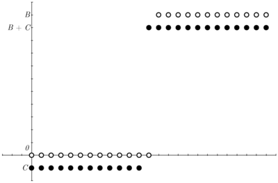
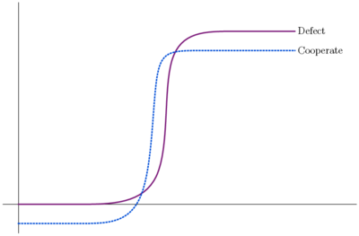
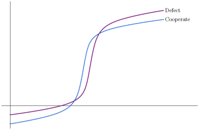
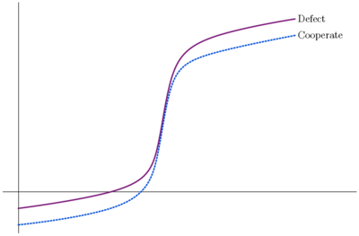
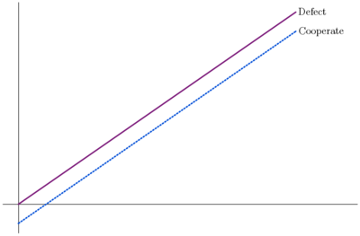
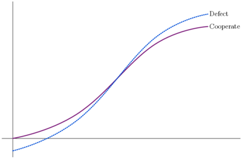
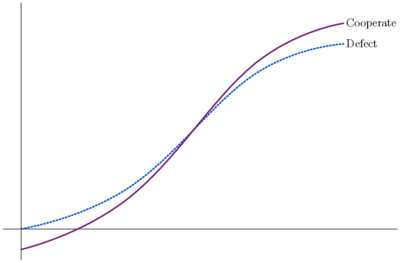

Prisoner’s Dilemma
Tanya and Cinque have been arrested for robbing the Hibernia Savings Bank and placed in separate isolation cells. Both care much more about their personal freedom than about the welfare of their accomplice. A clever prosecutor makes the following offer to each: “You may choose to confess or remain silent. If you confess and your accomplice remains silent I will drop all charges against you and use your testimony to ensure that your accomplice does serious time. Likewise, if your accomplice confesses while you remain silent, they will go free while you do the time. If you both confess I get two convictions, but I'll see to it that you both get early parole. If you both remain silent, I'll have to settle for token sentences on firearms possession charges. If you wish to confess, you must leave a note with the jailer before my return tomorrow morning.”
The “dilemma” faced by the prisoners here is that, whatever the other does, each is better off confessing than remaining silent. But the outcome obtained when both confess is worse for each than the outcome they would have obtained had both remained silent. A common view is that the puzzle illustrates a conflict between individual and group rationality. A group whose members pursue rational self-interest may all end up worse off than a group whose members act contrary to rational self-interest. More generally, if the payoffs are not assumed to represent self-interest, a group whose members rationally pursue any goals may all meet less success than if they had not rationally pursued their goals individually. A closely related view is that the prisoner's dilemma game and its multi-player generalizations model familiar situations in which it is difficult to get rational, selfish agents to cooperate for their common good. Much of the contemporary literature has focused on identifying conditions under which players would or should make the “cooperative” move corresponding to remaining silent. A slightly different interpretation takes the game to represent a choice between selfish behavior and socially desirable altruism. The move corresponding to confession benefits the actor, no matter what the other does, while the move corresponding to silence benefits the other player no matter what that other player does. Benefiting oneself is not always wrong, of course, and benefiting others at the expense of oneself is not always morally required, but in the prisoner's dilemma game both players prefer the outcome with the altruistic moves to that with the selfish moves. This observation has led David Gauthier and others to take the prisoner's dilemma to say something important about the nature of morality.
Here is another story. Bill has a blue cap and would prefer a red one, while Rose has a red cap and would prefer a blue one. Both prefer two caps to any one and either of the caps to no cap at all. They are each given a choice between keeping the cap they have or giving it to the other. This “exchange game” has the same structure as the story about the prisoners. Whether Rose keeps her cap or gives to Bill, Bill is better off keeping his and she is better off if he gives it to her. Whether Bill keeps his cap or gives it to Rose, Rose is better off keeping hers and he is better off if she gives it to him. But both are better off if they exchange caps than if they both keep what they have. The new story suggests that the prisoner's dilemma also occupies a place at the heart of our economic system. It would seem that any market designed to facilitate mutually beneficial exchanges will need to overcome the dilemma or avoid it.
Puzzles with the structure of the prisoner's dilemma were discussed by Merrill Flood and Melvin Dresher in 1950, as part of the Rand Corporation's investigations into game theory (which Rand pursued because of possible applications to global nuclear strategy). The title “prisoner's dilemma” and the version with prison sentences as payoffs are due to Albert Tucker, who wanted to make Flood and Dresher's ideas more accessible to an audience of Stanford psychologists. More recently, it has been suggested (Peterson, p1) that Tucker may have been discussing the work of his famous graduate student John Nash, and Nash 1950 (p. 291) does indeed contain a game with the structure of the prisoner's dilemma as the second in a series of six examples illustrating his technical ideas. Although Flood and Dresher (and Nash) didn't themselves rush to publicize their ideas in external journal articles, the puzzle has since attracted widespread and increasing attention in a variety of disciplines. Donninger reports that “more than a thousand articles” about it were published in the sixties and seventies. A Google Scholar search for “prisoner's dilemma” in 2018 returns 49,600 results.
The sections below provide a variety of more precise characterizations of the prisoner's dilemma, beginning with the narrowest, and survey some connections with similar games and some applications in philosophy and elsewhere. Particular attention is paid to iterated and evolutionary versions of the game. In the fomer, the prisoner's dilemma game is played repeatedly, opening the possibility that a player can use its current move to reward or punish the other's play in previous moves in order to induce cooperative play in the future. In the latter, members of a population play one another repeatedly in prisoner's dilemma games and those who get higher payoffs “reproduce” more rapidly than those who get lower payoffs. ‘Prisoner's dilemma’ is abbreviated as ‘PD’.
- 1. Symmetric 2×2 PD With Ordinal Payoffs
- 2. Asymmetry
- 3. Cardinal Payoffs and Impure PDs
- 4. Multiple Moves and the Optional PD
- 5. Multiple Players, Tragedies of the Commons, Voting and Public Goods
- 6. Single Person Interpretations
- 7. The PD with Replicas and Causal Decision Theory
- 8. The Stag Hunt and the PD
- 9. Asynchronous Moves and Trust Games
- 10. Transparency
- 11. Finite Iteration
- 12. The Centipede and the Finite IPD
- 13. Infinite Iteration
- 14. Indefinite Iteration
- 15. Iteration With Error
- 16. Evolution
- 17. Signaling
- 18. Spatial PDs
- 19. PDs and Social Networks
- 20. Zero-Determinant Strategies
- 21. Group Selection and the Haystack PD
- Bibliography
- Academic Tools
- Other Internet Resources
- Related Entries
1. Symmetric 2×2 PD With Ordinal Payoffs
In its simplest form the PD is a game described by the payoff matrix:
| \(\bC\) | \(\bD\) | |
| \(\bC\) | \(R,R\) | \(S,T\) |
| \(\bD\) | \(T,S\) | \(P,P\) |
satisfying the following chain of inequalities:
- (PD1) \(T \gt R \gt P \gt S\)
There are two players, Row and Column. Each has two possible moves, “cooperate” (\(\bC\)) or “defect” (\(\bD\)), corresponding, respectively, to the options of remaining silent or confessing in the illustrative anecdote above. For each possible pair of moves, the payoffs to Row and Column (in that order) are listed in the appropriate cell. \(R\) is the “reward” payoff that each player receives if both cooperate. \(P\) is the “punishment” that each receives if both defect. \(T\) is the “temptation” that each receives as sole defector and \(S\) is the “sucker” payoff that each receives as sole cooperator. We assume here that the game is symmetric, i.e., that the reward, punishment, temptation and sucker payoffs are the same for each player, and payoffs have only ordinal significance, i.e., they indicate whether one payoff is better than another, but tell us nothing about how much better. It is now easy to see that we have the structure of a dilemma like the one in the story. Suppose Column cooperates. Then Row gets \(R\) for cooperating and \(T\) for defecting, and so is better off defecting. Suppose Column defects. Then Row gets \(S\) for cooperating and \(P\) for defecting, and so is again better off defecting. The move \(\bD\) for Row is said to strictly dominate the move \(\bC\): whatever Column does, Row is better off choosing \(\bD\) than \(\bC\). By symmetry \(\bD\) also strictly dominates \(\bC\) for Column. Thus two “rational” players will defect and receive a payoff of \(P\), while two “irrational” players can cooperate and receive greater payoff \(R\). In standard treatments, game theory assumes rationality and common knowledge. Each player is rational, knows the other is rational, knows that the other knows he is rational, etc. Each player also knows how the other values the outcomes. But since \(\bD\) strictly dominates \(\bC\) for both players, the argument for dilemma here requires only that each player knows his own payoffs. (The argument remains valid, of course, under the stronger standard assumptions.) It is also worth noting that the outcome \((\bD, \bD)\) of both players defecting is the game's only strict nash equilibrium, i.e., it is the only outcome from which each player could only do worse by unilaterally changing its move. Flood and Dresher's interest in their dilemma seems to have stemmed from their view that it provided a counterexample to the claim that the nash equilibria of a game constitute its natural “solutions”.
If there can be “ties” in rankings of the payoffs, condition PD1 can be weakened without destroying the nature of the dilemma. For suppose that one of the following conditions obtains:
- (PD2) \(T \gt R \gt P \ge S\), or
- \(T \ge R \gt P \gt S\)
Then, for each player, although \(\bD\) does not strictly dominate \(\bC\), it still weakly dominates in the sense that each player always does at least as well, and sometimes better, by playing \(\bD\). Under these conditions it still seems rational to play \(\bD\), which again results in the payoff that neither player prefers. Let us call a game that meets PD2 a weak PD. Note that in a weak PD that does not satisfy PD1 mutual defection is no longer a nash equilibrium in the strict sense defined above. It is still, however, the only nash equilibrium in the weaker sense, that neither player can improve its position by unilaterally changing its move. Again, one might suppose that if there is a unique nash equilibrium of this weaker variety, rational self-interested players would reach it.
2. Asymmetry
Without assuming symmetry, the PD can be represented by using subscripts \(r\) and \(c\) for the payoffs to Row and Column.
|
|
\(\bC\) | \(\bD\) |
| \(\bC\) | \(R_r,R_c\) | \(S_r,T_c\) |
| \(\bD\) | \(T_r,S_c\) | \(P_r,P_c\) |
If we assume that the payoffs are ordered as before for each player, i.e., that \(T_i \gt R_i \gt P_i \gt S_i\) when \(i=r,c\), then, as before, \(\bD\) is the strictly dominant move for both players, but the outcome \((\bD, \bD)\) of both players making this move is worse for each than \((\bC, \bC)\). The force of the dilemma can now also be felt under weaker conditions, however. Consider the following three pairs of inequalities:
- (PD3) a. \(T_r \gt R_r\) and \(P_r \gt S_r\)
- b. \(T_c \gt R_c\) and \(P_c \gt S_c\)
- c. \(R_r \gt P_r\) and \(R_c \gt P_c\)
If these conditions all obtain the argument for dilemma goes through as before. Defection strictly dominates cooperation for each player, and \((\bC,\bC)\) is strictly preferred by each to \((\bD,\bD)\). If one of the two \(\gt\) signs in each of the conditions \(a\)–\(c\) is replaced by a weak inequality sign (\(\ge\)) we have a weak PD. \(\bD\) weakly dominates \(\bC\) for each player (i.e., \(\bD\) is as good as \(\bC\) in all cases and better in some) and \((\bC,\bC)\) weakly better than \((\bD,\bD)\) (i.e., it is at least as good for both players and better for one). Since none of the clauses requires comparisons between \(r\)'s payoffs and \(c\)'s, we need not assume that \(\gt\) has any “interpersonal” significance.
Now suppose we drop the first inequality of either \(a\) or \(b\) (but not both). A game that meets the resulting conditions might be termed a common knowledge PD. As long as each player knows that the other is rational and each knows the other's ordering of payoffs, we still feel the force of the dilemma. For suppose a holds. Then \(\bD\) is the dominant move for Row. Column, knowing that Row is rational, knows that Row will defect, and so, by the remaining inequality in \(b\), will defect himself. Similarly, if \(b\) holds Column will defect, and Row, realizing this, will defect herself. By \(c\), the resulting \((\bD,\bD)\) is again worse for both than \((\bC,\bC)\).
3. Cardinal Payoffs and Impure PDs
If the game specifies absolute (as opposed to relative) payoffs, then universal cooperation may not be a pareto optimal outcome even in the two person PD. For under some conditions both players do better by adopting a mixed strategy of cooperating with probability \(p\) and defecting with probability \((1-p)\). This point is illustrated in the graphs below.
Figure 1
Here the \(x\) and \(y\) axes represent the utilities of Row and Column. The four outcomes entered in the matrix of the second section are represented by the labeled dots. Conditions PD3a and PD3b (see above) ensure that \((\bC,\bD)\) and \((\bD,\bC)\) lie northwest and southeast of \((\bD,\bD)\), and PD3c is reflected in the fact that \((\bC,\bC)\) lies northeast of \((\bD,\bD)\). Suppose first that \((\bD,\bD)\) and \((\bC,\bC)\) lie on opposite sides of the line between \((\bC,\bD)\) and \((\bD,\bC)\), as in the graph on the left. Then the four points form a convex quadrilateral, and the payoffs of the feasible outcomes of mixed strategies are represented by all the points on or within this quadrilateral. Of course a player can really only get one of four possible payoffs each time the game is played, but the points in the quadrilateral represent the expected values of the payoffs to the two players. If Row and Column cooperate with probabilities \(p\) and \(q\) (and defect with probabilities \(p^*=1-p\) and \(q^*=1-q\)), for example, then the expected value of the payoff to Row is \(p^*qT+pqR+p^*q^*P+pq^*S\). A rational self-interested player, according to a standard view, should prefer a higher expected payoff to a lower one. In the graph on the left the payoff for universal cooperation (with probability one) is pareto optimal among the payoffs for all mixed strategies. In the graph on the right, however, where both \((\bD, \bD)\) and \((\bC, \bC)\) lie southwest of the line between \((\bC, \bD)\) and \((\bD, \bC)\), the story is more complicated. Here the payoffs of the feasible outcome lie within a figure bounded on the northeast by three distinct curve segments, two linear and one concave. Notice that \((\bC, \bC)\) is now in the interior of the region bounded by solid lines, indicating that there are mixed strategies that provide both players a higher expected payoff than \((\bC, \bC)\). It is important to note that we are talking about independent mixed strategies here. Row and Column use private randomizing devices and have no communication. If they were able to correlate their mixed strategies, so as to ensure, say \((\bC, \bD)\) with probability \(p\) and \((\bD, \bC)\) with probability \(p^*\), the set of feasible solutions would extend up to (and include) the dotted line between \((\bC, \bD)\) and \((\bD, \bC)\). The point here is that, even confined to independent strategies, there are some games satisfying PD3 in which both players can both do better than they do with universal cooperation. A PD in which universal cooperation is pareto optimal may be called a pure PD. (This phenomenon is identified in Kuhn and Moresi and applied to moral philosophy in Kuhn 1996.) A pure PD is characterized by adding to PD3 the following condition.
- (P) \((T_r - R_r)(T_c - R_c) \le (R_r - S_r)(R_c - S_c)\)
In a symmetric game \(P\) reduces to the simpler condition
- (RCA) \(R \ge \tfrac{1}{2}(T+S)\)
(named after the authors Rapoport, Chammah and Axelrod who employed it).
4. Multiple Moves and the Optional PD
Speaking generally, one might say that a PD is a game in which a “cooperative” outcome obtainable only when every player violates rational self-interest is unanimously preferred to the “selfish” outcome obtained when every player adheres to rational self-interest. We can characterize the selfish outcome either as the result of each player pursuing its dominant (strongly dominant) strategy, or as the unique weak (strong) nash equilibrium. In a two move game the two characterizations come to the same thing—a dominant move pair is a unique equilibrium and a unique equilibrium is a dominant move pair. As the payoff matrix below shows, however, the two notions diverge in a game with more than two moves.
| \(\bC\) | \(\bD\) | \(\bN\) | |
| \(\bC\) | \(R,R\) | \(S,T\) | \(T,S\) |
| \(\bD\) | \(T,S\) | \(P,P\) | \(R,S\) |
| \(\bN\) | \(S,T\) | \(S,R\) | \(S,S\) |
Here each player can choose “cooperate”, (\(\bC\)) “defect” (\(\bD\) ), or “neither” (\(\bN\)),and the payoffs are ordered as before. Defection is no longer dominant, because each player is better off choosing \(\bC\) than \(\bD\) when the other chooses \(\bN\). Nevertheless \((\bD, \bD)\) is still the unique equilibrium. Let us label a game like this in which the selfish outcome is the unique equilibrium an equilibrium PD, and one in which the selfish outcome is a pair of dominant moves a dominance PD. As will be seen below, attempts to “solve” the PD by allowing conditional strategies can create multiple-move games that are themselves equilibrium PDs.
Three-move games with a slightly different structure have received attention under the label “optional PD.” See, for example, Kitcher (2011), Kitcher (1993), Batali and Kitcher, Szabó and Hauert, Orbell and Dawes (1993), and Orbell and Dawes (1991). The first three sources take optional games also to allow players to signal willingness to engage (i.e., play \(\bC\) or \(\bD\) against) particular opponents. The simple three-move games without signaling discussed in this section are called “semi-optional” in Batali and Kitcher. \(S,R,P\) and \(T\) payoffs are ordered as before, but the payoff matrix now contains, in addition, an “opt-out” value, \(O\), that lies between \(P\) and \(R\).
| \(\bC\) | \(\bD\) | \(\bN\) | |
| \(\bC\) | \(R,R\) | \(S,T\) | \(O,O\) |
| \(\bD\) | \(T,S\) | \(P,P\) | \(O,O\) |
| \(\bN\) | \(O,O\) | \(O,O\) | \(O,O\) |
In this version of the game, defection is no longer a dominant move and mutual defection is no longer an equilibrium outcome. If Column cooperates, Row does best by defecting; if Column defects, Row does best by playing \(\bN\); and if Column plays \(\bN\), then Row does equally well by playing any move. From the outcome of mutual \(\bD\) either player can benefit by unilaterally switching to \(\bN\). But from the outcome of mutual \(\bN\), neither party can benefit by unilaterally changing moves. So the optional PD is a weak equilibrium PD, with \(\bN\) playing the role of defection. Orbell and Dawes (1991 and 1993) add the additional condition that the opt-out payoff \(O\) is equal to zero. In an optional PD, a rational player will engage (i.e., play either \(\bC\) or \(\bD\)) if and only if she expects her opponent to cooperate. For, if her opponent does cooperate, she will be guaranteed at least \(R\) by engaging and exactly \(O\) by not engaging, whereas if her opponent does not cooperate she will be guaranteed at most \(P\) by engaging and exactly \(O\) by not engaging. This feature becomes especially salient when \(O\) is zero, for then the payoff for engaging is positive if and only if one's opponent cooperates.
The description of the “neither” move and “opt-out” payoffs varies somewhat in accounts of the optional PD. For Kitcher they frequently represent a choice to “go solo.” For example, a baboon, rather than thoroughly or sloppily grooming a partner in exchange for being groomed thoroughly or sloppily by its partner, may choose to groom itself. Often, on the other hand, it is suggested is that \(\bN\) represents a choice to “sit out” the game, perhaps in order to obtain a more suitable partner with whom to play later. The significance of this difference, if any, will emerge in iterated and evolutionary versions of the game. (See sections 11–17 below.) Those who write about the optional PD often express the hope that it might provide a suitable model to investigate the idea that cooperation can be achieved if agents select the partners with whom they interact. That idea is modeled somewhat differently, and perhaps more directly, in Social Network Games discussed in section 19 below. Further discussion of the idea is left to that section.
Orbell and Dawes are particularly concerned with an explanation for cooperative behavior that rests on the empirically supported hypothesis that individuals often base expectations about behavior of others on their knowledge of their own behavior and tendencies. This hypothesis suggests that a cooperator is more likely than a defector to expect others to cooperate and therefore, if he is rational, more likely to engage in the optional PD. Orbell and Dawes (1991) demonstrate that, if a cooperator is substantially more likely than a defector to expect his opponent to cooperate, then (provided the odds of his opponent cooperating are sufficiently high), a cooperator can actually expect a higher return than a defector in the optional PD. Orbell and Dawes (1993) present experimental evidence that participants in an optional PD do receive higher average payouts than those in the corresponding PD lacking the \(\bN\) move. They provide clever statistical arguments to support the following hypotheses: intending cooperators (those who cooperate when they must engage) do better in the optional PD than in the corresponding PD; intending defectors generally do worse in the optional PD; under some conditions these gains and losses are sufficient to make the intending cooperators better off than the intending defectors (as might be predicted by the theoretical result of the previous paper); and, finally, those who expect cooperation from others (as evidenced by their engagement) do so on the basis of their own tendency to cooperate rather rather than any direct discernment of the character of their opponent. (See Transparency below.)
5. Multiple Players, Tragedies of the Commons, Voting and Public Goods
Most of those who maintain that the PD illustrates something important about morality seem to believe that the basic structure of the game is reflected in situations that larger groups, perhaps entire societies, face. The most obvious generalization from the two-player to the many-player game would pay each player the reward (\(R\)) if all cooperate, the punishment (\(P\)) if all defect, and, if some cooperate and some defect, it would pay the cooperators the sucker payoff (\(S\)) and the defectors the temptation (\(T\)). But it is unlikely that we face many situations of this structure.
A common view is that a multi-player PD structure is reflected in what Garret Hardin popularized as “the tragedy of the commons.” Each member of a group of neighboring farmers prefers to allow his cow to graze on the commons, rather than keeping it on his own inadequate land, but the commons will be rendered unsuitable for grazing if more than some threshold number use it. More generally, there is some social benefit \(B\) that each member can achieve if sufficiently many pay a cost \(C\). We might represent the payoff matrix as follows:
| more than \(n\)
choose \(C\) |
\(n\) or fewer
choose \(C\) | |
| \(\bC\) | \(C+B\) | \(C\) |
| \(\bD\) | \(B\) | \(0\) |
The cost \(C\) is assumed to be a negative number. The “temptation” here is to get the benefit without the cost, the reward is the benefit with the cost, the punishment is to get neither and the sucker payoff is to pay the cost without realizing the benefit. So the payoffs are ordered \(B \gt (B+C) \gt 0 \gt C\). As in the two-player game, it appears that \(\bD\) strongly dominates \(\bC\) for all players, and so rational players would choose \(\bD\) and achieve 0, while preferring that everyone would choose \(\bC\) and obtain \(C+B\).
Unlike the more straightforward generalization, this matrix does reflect, in a highly idealized way, common social choices — between depleting and conserving a scarce resource, between using polluting and non-polluting means of manufacture or disposal, and between participating and not participating in a group effort towards some common goal. When the number of players is small, it represents a version of what has been called the “volunteer dilemma”. A group needs a few volunteers, but each member is better off if others volunteer. (Notice, however, that in a true volunteer dilemma, where only one volunteer is needed, \(n\) is zero and the top right outcome is impossible. Under these conditions \(\bD\) no longer dominates \(\bC\) and the game loses its PD flavor.) A particularly vexing manifestation of this game occurs when a vaccination known to have serious risks is needed to prevent the outbreak of a fatal disease. If enough of her neighbors get the vaccine, each person may be protected without assuming therisks.
One idealizion here of the situations described is that the costs and benefits of cooperation are assumed to be independent of the number of those who cooperate. Until the threshold of cooperation is exceeded, nobody gets the benefit. Afterwards, everyone does. They are, in the terminology of Frolich et al, lumpy. This is not true of, say, a lake made clean when residents refrain from dumping waste into it, or a gas supply maintained by users' conservation. We will consider relaxing this idealization later. For now, note that a situation more closely mirrored by the matrix is faced by the supporters of a particular political candidate or proposition who face the choice of whether to vote in a majority-rule election. Once enough supporters to constitute a majority choose to vote, additional votes will not increase their benefit. For this reason we might call the game described by the matrix above a voting game.
The voting game, as characterized above, has a somewhat different character than the two-player PD. First, even if each player's moves are entirely independent of the others, the alternatives represented by the columns in the commons matrix above are no longer independent of the alternatives represented by the rows. My choosing \(\bC\) necessarily increases the chances that more than \(n\) people will choose \(\bC\). To ensure independence we should really redraw the matrix as follows:
| more than \(n\) others
choose \(C\) |
\(n\) others choose \(C\) | fewer than \(n\) others
choose \(C\) | |
| \(\bC\) | \(C+B\) | \(C+B\) | \(C\) |
| \(\bD\) | \(B\) | \(0\) | \(0\) |
But now we see that move \(\bD\) does not dominate \(\bC\), as it does in the 2-player prisoner's dilemma. When we are at the threshold of adequate cooperation, where exactly \(n\) others choose \(\bC\), I am better off cooperating. Similarly, whereas mutual defection is the only nash equilibrium in the original PD, this game has two equilibria. One is universal defection, since any player unilaterally departing from that outcome will move from payoff 0 to \(C\). But a second is the state of minimally effective cooperation, where the number of cooperators is just sufficient to obtain the benefit. A defector who unilaterally departs from that outcome will move from \(B\) to \(B+C\) and a cooperator who unilaterally departs will move from \(B+C\) to 0. Finally, in the orginal PD, every outcome except universal defecton is pareto optimal--i.e., as long as at least one of the players cooperates, there is no outcome in which in which each player is at least as well off and one is better off. In the voting game, on the other hand, only the states of minimally effective cooperation are pareto optimal. If the number of cooperators exceeds the threshold by one or more, a new defector will benefit himself while hurting no others.
In view of these properties, it may seem that the voting game presents far less of a dilemma than the PD. There are, after all, equilibria that are pareto-optimal outcomes. In practice, however, it is difficult to see how these equilibria could be attained and the all-defect equilibrium could be avoided. When n is large, defection “almost dominates” cooperation. In the voting case, for example, a player might plausibly reason: if few of my fellow supporters vote, my vote will be futile, if many of them do it will be unneccessary. Even if a group were in the unlikely situation of being just below the threshold of minimally effective cooperation, a prospective voter would have no way of knowing this. In the pollution and conservation examples moves should really not be modeled as simultaneous (see Asynchronous Moves below), so we may perhaps be a little more optimistic. By observing the actions of those who have moved previously a player might know whether at his turn the threshold of minimally effective cooperation is near. In most real-world situations, however, a player can deduce this only by observing the effects of those actions, and often these effects manifest themselves only after his move is made. A conspicuous example of this delay effect might be the succession of carbon-emitting activities leading to climate change.
In examples philosophers discuss as instances of prisoner's dilemma, it is taken to be obvious that universal cooperation is the most socially desirable outcome. In the voters dilemma, since minimally effective cooperation is pareto superior, one might think that we should aim instead for that outcome. But this seems to depend on the nature of the choices involved. In the medical example it may seem best to vaccinate everyone. In the agricultural example, however, it seems foolish to stipulate that nobody use the commons. Someone who avoids vaccination in the former case is seen as a “free rider”. An underused commons in the latter seems to exemplify “surplus cooperation.” All these cases seem to raise questions of fairness. If t+1 is the size of a minimally effective collection of players, then any profile in which exactly t+1 players cooperate is a pareto optimal equilibrium. If there is no reason to prefer one such profile over another, it is possible that fairness would dictate choosing the inferior outcome of universal cooperation.
The two-person version of the tragedy of the commons game (with threshold of one) produces a matrix presenting considerably less of a dilemma.
| \(\bC\) | \(\bD\) | |
| \(\bC\) | \(B+C,B+C\) | \(C,0\) |
| \(\bD\) | \(0,C\) | \(0,0\) |
This game captures David Hume's example of a boat with one oarsman on the port side and another on the starboard (provided we assume that Hume's oarsmen must make their choices between rest (D) and exertion (\(\bC\)) simultaneously). If either rows alone, she exerts herself to no good effect, which is worse than had she merely rested. Mutual cooperation here is identical to minimally effective cooperation and therefore is both an equilibrium outcome and a pareto optimal outcome. Games of this sort are discussed in section 8 below, under the label “stag hunt.”
The above representations of the tragedy of the commons make the simplifying assumptions that the costs and benefits of cooperation are the same for each player, that the cost of cooperation is independent of the number of players who cooperate, and that the size of the benefit (\(0\) or \(B)\)) depends only on whether the number of cooperators exceeds the threshold. A somewhat more general account would replace \(C\) and \(B\) by functions \(C(i,j)\) and \(B(i,j)\), representing the cost of cooperation to player \(i\) when he is one of exactly \(j\) players who cooperate and the benefit to player \(i\) when exactly \(j\) players cooperate. We suppose that there is some threshold \(t\) for minimally effective cooperation so that \(B(i,j)\) is not defined unless \(j \gt t\). We may also assume additional cooperation never reduces the benefit \(i\) gets from effective cooperation, i.e., \(B(i,j+1) \ge B(i,j)\) when \(j \gt t\) and that additional defection never reduces the cost \(i\) bears in cooperating, i.e., \(C(i,j+1) \ge C(i,j)\). Now suppose, in addition, that, once the threshold of effective cooperation has been exceeded, any benefit one gets from from the presence of an additional cooperator is exceeded by one's cost of cooperation and that the costs of ineffective cooperation are genuine, i.e., for all players \(i\), \(B(i,j) \gt ( B(i,j+1)+C(i,j+1) )\) when \(j\) is greater than \(t\) and \(0 \gt C(i,j)\) when \(j\) is less than or equal to \(t\). Finally, suppose that the benefits to each player \(i\), of effective cooperation exceed the costs, i.e., for \(j \gt t\), \(B(i,j)+C(i,j) \gt 0\). We then have a tragedy of the commons game, which presents a familiar dilemma: defection benefits an individual in every circumstance (except the one where exactly \(t\) others cooperate) but everybody is better off in any state of effective cooperation than in any state without it. This account could be easily be modified to allow threshold of minimally effective cooperation to differ from one individual to another (\(i\)'s clean water requirements might be more stringent than \(j\)'s for example) or to allow \(B\) to be defined everywhere (thus eliminating the threshold, so that we always benefit from another's cooperation). The resulting game would still have its PD flavor.
Phillip Pettit has pointed out that examples that might be represented as many-player PDs come in two flavors. The examples discussed above might be classified as free-rider problems. My temptation is to enjoy some benefits brought about by burdens shouldered by others. The other flavor is what Pettit calls “foul dealer” problems. My temptation is to benefit myself by hurting others. Suppose, for example, that a group of people are applying for a single job, for which they are equally qualified. If all fill out their applications honestly, they all have an equal chance of being hired. If one lies, however, he can ensure that he is hired while, let us say, incurring a small risk of being exposed later. If everyone lies, they again have an equal chance for the job, but now they all incur the risk of exposure. Thus a lone liar, by reducing the others' chances of employment from slim to none, raises his own chances from slim to sure. As Pettit points out, when the minimally effective level of cooperation is the same as the size of the population, there is no opportunity for free-riding (everyone's cooperation is needed), and so the PD must be of the foul-dealing variety. But (Pettit's contrary claim notwithstanding) not all foul-dealing PDs seem to have this feature. Suppose, for example, that two applicants in the story above will be hired. Then everyone gets the benefit (a chance of employment without risk of exposure) unless two or more players lie. Nevertheless, the liars seem to be foul dealers rather than free riders. A better characterization of the foul-dealing dilemma might be that every defection from a generally cooperative state strictly reduces the payoffs to the cooperators, i.e., for every player \(i\) and every \(j\) greater than the threshold, \(B(i,j+1)+ C(i,j+1) \gt B(i,j)+ C(i,j)\). A free-rider's defection benefits himself but does not, by itself, hurt the cooperators. A foul-dealer's defection benefits himself and hurts the cooperators.
The game labeled a many-person PD in Schelling, in Molander 1992, and elsewhere requires that the payoff to each co-operator and defector increases strictly with the number of cooperators and that the sum of the payoffs to all parties increases with the number of cooperators (so that one party's switching from defection to cooperation always raises the sum). Neither of these conditions is met by the formulation above, and one may question whether they are appropriate for the examples given. The margin of victory would not seem to raise the value of winning an election. Natural filtering systems may allow a body of water to absorb a certain amount of waste with zero harmful effects. It is often plausible, however, to maintain that they hold “locally,” i.e., for \(j\) close to the threshold \(t\) for minimally effective cooperation, it may be reasonable to assume that:
- for every individual \(i\), \(B(i, j+1)+C(i,j+1) \gt B(i, j)+C(i,j)\) for \(j \gt t\),
- for every individual \(i\), \(C(i, j+1) \gt C(i,j)\) for \(j \le t\), and \[ \begin{align} &B(1,j+1)+ C(1, j+1) + \ldots + B(j+1,j+1) + C(t+1,j+1) \\ & \quad\quad + B(j+2,j+1)) + \ldots + B(n, j+1) \\ & \ \gt B(1,j) + C(1,j) + \ldots + B(j,j) + C(j,j) \\ & \quad\quad + B(j+1,j) + \ldots + B(n,j). \end{align} \]
By requiring that cooperation of others always strictly benefits each player, the Schelling and Molander formulations of the \(n\)-person PD fail to model the surplus cooperation/free rider phenomenon that seems to infuse many of the tragedy-of-commons examples. Their conditions might, however be a plausible model for certain public good dilemmas. It is not unreasonable to suppose that any contribution towards public health, national defense, highway safety, or clean air is valuable to all, no matter how little or how much we already have, but that the cost to each for his own contribution to those goods always exceeds the benefit that he derives from that contribution. A particularly simple game meeting the conditions above is the public goods game. Each player may choose to contribute either nothing or a fixed utility C to a common store. Contributions to the store are added together, mutiplied by some factor greater than one, and divided equally among the members of the group. In this way a player benefits by same amount from the contributions of others whether she contributes herself or not, and loses by the same (smaller) amount from her own contribution whether others contribute or not. This is not true of PD's in general, though it is true of the exchange game mentioned in the introduction.
The formulations of Schelling and Per Molander and the public goods game have the advantage of focusing attention on the PD quality of the game. Defection dominates cooperation, while universal cooperation is unanimously preferred to universal defection. Michael Taylor goes even further in this direction. His version of the many-person PD requires only the two PD-conditions just mentioned and the one additional condition that defectors are always better off when some cooperate than when none do. (Taylor's main concern is with the iterated version of this game, a topic that will not be addressed here.)
These ideas can be made more perspicuous by some pictures, which suggest additional refinements and extensions. Figure 2 below illustrates the voting game. In graph 2(a), twenty five supporters are choosing whether to vote in a majority-rule election. Utility to a player i is plotted against the number of those other than i who vote. Dark disks represent cooperators (voters) and circles represent defectors (non-voters). When the number of other voters is fewer than twelve or greater than twelve then defection beats cooperation. But when exactly twelve others vote it benefits i to vote.
|  |  |
| (a) | (b) |
Figure 2
In figure 2(b) smooth curves are drawn through the lines and circles to illustrate a more general form of the voting game. The utilities to cooperators and defectors are represented by two S-shaped curves. The curves intersect in two places. Now, instead of a single point of minimally effective cooperation, we have a small region between the two curves where cooperation beats defection. In terms of the polluted lake example, we might suppose that to the left of the first intersection, pollution is so bad that my additional contribution makes it no worse, and to the right of the second intersection, the lake is so healthy that it can handle my refuse with no ill effects. The intersection points are both equilibria, the polluting and fastitidious residents both lose by changing behavior. In terms of the voting example, we might suppose that the behavior of non-supporters is uncertain and the region between the curves represents the situations in which my vote increases the odds of winning in a way that exceeds my cost of voting.
The more general voting game satisfies the Schelling/Molander condition that utility of each player increases strictly with the level of cooperation only near the region where cooperation is effective. In figure 3 below the S-curves are bent so that this condition is met everywhere. In 3(a) the two curves still intersect twice. Bovens, which contains a very illuminating taxonomy of n-player games, labels this form the voting game and argues that it best represents situations described in the literature as tragedies of the commons. Note that if there is a value of x at which both curves lie above the equilibria, as there must be if the curves are upward sloping, then the equilibria here cannot be pareto optimal (as the lone equilibrium was in the simplest version of what was called the voting game above). Hence the tragedy. In graph 3(b) there are no intersections between the two curves. Thus the second of the Schelling/Molander conditions for a PD is also met: defection dominates cooperation. The final condition, that cooperation always raises the sum of utilities, is not so easily pictured, but, because the slopes of the two curves are positive, we can be sure that it will be met if the population is sufficiently large.
|  |  |
| (a) | (b) |
Figure 3
Benefits are somewhat less lumpy in these two games than the previous two. Lumpiness can by further reduced by further flattening the curves. At the limit, we get the public goods game shown in the first graph of figure 4. Here the curves are straight lines. Each additional cooperator provides both defectors and cooperators with the same additional benefit of mc/n where c is the cost of donation, m is the stipulated multiplier and n is the number of players in the game. If the curves are sufficiently flat, they can intersect at most once. Altogether there are three possibilities: the game pictured in figure 4(a), where the two curves do not intersect, the one pictured in 4(b), where cooperators' utility is above the defectors' to the left of the intersection and below it to the right, and the one pictured in 4(c), where the defectors' utility starts above that of the cooperators' and ends up below it. In the 4(b), one benefits by cooperating when few of the others do and defecting when most of the others cooperate. Bovens plausibly suggests that this should be regarded as a many-player version of the game of chicken: go straight if your opponent swerves and swerve if your opponent goes straight. In 4(c), one benefits by defecting when most others do and cooperating when most others do. As Bovens suggests, this might be regarded as a many-person version of the stag hunt: hunt together or separately if your opponent does likewise. (Stag hunt is further discussed in section 8 below). The first possibility, as we have seen, meets conditions plausibly associated with the PD.
|  |  |
| (a) | (b) |
|  | |
| (c) |
Figure 4
6. Single Person Interpretations
The PD is usually thought to illustrate conflict between individual and collective rationality, but the multiple player form (or something very similar) has also been interpreted as demonstrating problems within standard conceptions of individual rationality. One such interpretation, elucidated in Quinn, derives from an example of Parfit's. A medical device enables electric current to be applied to a patient's body in increments so tiny that there is no perceivable difference between adjacent settings. You are attached to the device and given the following choice every day for ten years: advance the device one setting and collect a thousand dollars, or leave it where it is and get nothing. Since there is no perceivable difference between adjacent settings, it is apparently rational to advance the setting each day. But at the end of ten years the pain is so great that a rational person would sacrifice all his wealth to return to the first setting.
We can view the situation here as a multi-player PD in which each “player” is the temporal stage of a single person. So viewed, it has at least two features that were not discussed in connection with the multi-player examples. First, the moves of the players are sequential rather than simultaneous (and each player has knowledge of preceding moves). Second, there is the matter of gradation. Increases in electric current between adjacent settings are imperceptible, and therefore irrelevant to rational decision-making, but sums of a number such increases are noticeable and highly relevant. Neither of these features, however, is peculiar to one-person examples. Consider, for example, the choice between a polluting and non-polluting means of waste disposal. Each resident of a lakeside community may dump his or her garbage in the lake or use a less convenient landfill. It is reasonable to suppose that each acts in the knowledge of how others have acted before. (See “Asynchronous Moves” below.) It is also reasonable to suppose that addition of one can of garbage to the lake has no perceptible effect on water quality, and therefore no effect on the welfare of the residents. The fact that the dilemma remains suggests that PD-like situations sometimes involve something more than a conflict between individual and collective rationality. In the one-person example, our understanding that we care more about our overall well-being than that of our temporal stages does not (by itself) eliminate the argument that it is rational to continue to adjust the setting. Similarly, in the pollution example, a decision to let collective rationality override individual rationality may not eliminate the argument for excessive dumping. It seems appropriate, however, to separate this issue from that raised in the standard PD. Gradations that are imperceptible individually, but weighty en masse give rise to intransitive preferences. This is a challenge to standard accounts of rationality whether or not it arises in a PD-like setting.
A second one-person interpretation of the PD is suggested in Kavka, 1991. On Kavka's interpretation, the prisoners are not temporal stages, but rather “subagents” reflecting different desiderata that I might bring to bear on a decision. Let us imagine that I am hungry and considering buying a snack. The options open to me are:
- Buy a scoop of chocolate gelato.
- Buy a scoop of orange sherbet.
- Buy a granola bar.
- Buy nothing.
My health-conscious side, “Arnold,” orders these options in the following order: \(c\), \(b\), \(d\), \(a\). My taste-conscious side, “Eppie,” ranks them: \(a\), \(b\), \(d\), \(c\). Such inner conflict among preferences might often be resolved in ways consistent with standard views about individual choice. My overall preference ordering, for example, might be determined from a weighted average of the utilities that Arnold and Eppie assign to each of the options. It is also possible, Kavka suggests, that my inner conflicts are resolved as if they were a result of strategic interaction among rational subagents. In this case, Arnold and Eppie can each choose either to insist on getting their way \((\bI)\) or to acquiesce to a compromise \((\bA)\). The interaction between subagents can then be represented by the following payoff matrix, where Arnold plays row and Eppie plays column.
|
|
\(\bA\) | \(\bI\) |
| \(\bA\) | \(b\) | \(a\) |
| \(\bI\) | \(c\) | \(d\) |
Examination of the table and preference orderings confirms that we again have an intrapersonal PD. Kavka argues that a story like this might “provide a psychologically plausible picture of how internal conflict can lead to suboptimal action.” It also undermines a standard view that choices reflect values in favor of one that they partially reflect, “the structure of inner conflict.”
7. The PD with Replicas and Causal Decision Theory
One controversial argument that it is rational to cooperate in a PD relies on the observation that my partner in crime is likely to think and act very much like I do. (See, for example, Davis 1977 and 1985 for a sympathetic presentation of one such argument and Binmore 1994, chapters 3.4 and 3.5, for a reformulation and extended rebuttal.) In the extreme case, my accomplice is an exact replica of me who is wired just as I am so that, of necessity, we do the same thing. It would then seem that the only two possible outcomes are where both players cooperate and where both players defect. Since the reward payoff exceeds the punishment payoff, I should cooperate. More generally, even if my accomplice is not a perfect replica, the odds of his cooperating are greater if I cooperate and the odds of his defecting are greater if I defect. When the correlation between our behaviors is sufficiently strong or the differences in payoffs is sufficiently great, my expected payoff (as that term is usually understood) is higher if I cooperate than if I defect. The counter argument, of course, is that my action is causally independent of my replica's. Since I can't affect what my accomplice does and since, whatever he does, my payoff is greater if I defect, I should defect. These arguments closely resemble the arguments for two positions on the Newcomb Problem, a puzzle popularized among philosophers in Nozick. (The extent of the resemblance is made apparent in Lewis.) The Newcomb Problem asks us to consider two boxes, one transparent and one opaque. In the transparent box we can see a thousand dollars. The opaque box may contain either a million dollars or nothing. We have two choices: take the contents of the opaque box or take the contents of both boxes. We know before choosing that a reliable predictor of our behavior has put a million dollars in the opaque box if he predicted we would take the first choice and left it empty if he predicted we would take the second. To see that each player in a PD faces a Newcomb problem, consider the following payoff matrix.
|
|
\(\bC\) | \(\bD\) |
| \(\bC\) | \(m,m\) | \(0,m+t\) |
| \(\bD\) | \(m+t,0\) | \(t,t\) |
By “cooperating” (choosing the opaque box), each player ensures that the other gets a million dollars (and a thousand extra for defecting). By “defecting” (choosing both boxes) each player ensures that he will get thousand dollars himself (and a million more if the other cooperates). As long as \(m \gt t \gt 0\), the structure of this game is an ordinary two-player, two-move PD (and any such PD can be represented in this form). Furthermore, the arguments for “one-boxing” and “two-boxing” in a Newcomb problem are the same as the arguments for cooperating and defecting in a prisoner's dilemma where there is positive correlation between the moves of the players. Two boxing is a dominant strategy: two boxes are better than one whether the first one is full or empty. On the other hand, if the predictor is reliable, the expected payoff for one-boxing is greater than the expected payoff for two-boxing. (See Hurley (1991) and Bermúdez (2015), however, for arguments that the two puzzles are significantly different.)
The intuition that two-boxing is the rational choice in a Newcomb problem, or that defection is the rational choice in the PD with positive correlation between the players' moves, seems to conflict with the idea that rationality requires maximizing expectation. This apparent conflict has led some to suggest that standard decision theory needs to be refined in cases in which an agent's actions provide evidence for, without causing, the context in which he is acting. In the case of the PD, standard (evidential) decision theory asks Player One to compare his expected utilities of cooperation and defection, which can be written as \(p(\bC_2 \mid \bC_1) \times R + p(\bD_2 \mid \bC_1) \times S\) and \(p(\bC_2 \mid \bD_1) \times T + p(\bD_2 \mid \bD_1) \times P\) (where, for example, \(p(\bC_2 \mid \bC_1)\) is the conditional probability that player Two cooperates given that Player One cooperates). If the players' moves are strongly correlated then \(p(\bC_2 \mid \bC_1)\) and \(p(\bD_2 \mid \bD_1)\) will be close to one and \(p(\bC_2 \mid \bD_1)\) and \(p(\bD_2 \mid \bC_1)\) will be close to zero. On the suggested revision, these conditional probabilities should be replaced by some kind of causally conditional probabilities, which might (on some accounts) be expressed by phrases like “the probability that if One were to cooperate, Two would also cooperate.” When the moves are causality independent this would just be the probability that Two cooperates.
The rather far-fetched scenario described in Newcomb's Problem initially led some to doubt the importance of the distinction between causal and evidential decision theory. Lewis argues that the link to the PD suggests that situations where the two decisions diverge are not so unusual, and recent writings on causal decision theory contain many examples far less bizarre than Newcomb's problem. (See Joyce, for example.)
In recent years technical machinery from the epistemic foundations of game theory literature and various logics of conditionals has been employed to represent arguments for cooperation and defection in prisoner's dilemma games between replicas (and for one-boxing and two-boxing in the Newcomb problem). See Bonanno for one example and a discussion of several others. These representations make clear some subtle assumptions about the nature of rationality that underly the arguments. Despite the increasing sophistication of the discussion, however, there remain people committed to each view.
It might be noted that what is here called “PD between replicas” is usually called “PD with twins” in the literature. One reason for the present nomenclature is to distinguish these ideas from an experimental literature reporting on PD games played with real (identical or fraternal) twins. (See, for example, Segal and Hershberger.) It turns out that twins are more likely to cooperate in a PD than strangers, but there seems to be no suggestion that the reasoning that leads them to do so follows the controversial arguments presented above.
8. The Stag Hunt and the PD
The idea mentioned in the introduction that the PD models a problem of cooperation among rational agents is sometimes criticized because, in a true PD, the cooperative outcome is not a nash equilibrium. Any “problem” of this nature, the critics contend, would be an unsolvable one. (See for example, Sugden or Binmore 2005, chapter 4.5.) By changing the payoff structure of the PD slightly, so that the reward payoff exceeds the temptation payoff, we obtain a game where mutual cooperation, as well as mutual defection, is a nash equilibrium. This game is known as the stag hunt. It might provide a better model for situations where cooperation is difficult, but still possible, and it may also be a better fit for other roles sometimes assigned to the PD. More specifically, a stag hunt is a two player, two move game with a payoff matrix like that for the PD given in section 1 where the conditions PD1 are replaced by:
- (SH) a. \(R \gt T\)
- b. \(R \gt P\)
- c. \(P \gt S\)
The fable dramatizing the game and providing its name, gleaned from a passage in Rousseau's Discourse on Inequality, concerns a hunting expedition rather than a jail cell interrogation. Two hunters are are looking to bag a stag. Success is uncertain and, if it comes, require the efforts of both. On the other hand, either hunter can forsake his partner and catch a hare with a good chance of success. A typical payoff matrix is shown below.
|
|
\(\bC\) | \(\bD\) |
| \(\bC\) | \(4,4\) | \(0,3\) |
| \(\bD\) | \(3,0\) | \(3,3\) |
Here the “cooperative” move is hunting stag with one's partner and “defection” is hunting hare by oneself. The “temptation” payoff in a stag hunt is no longer much of a temptation, but we retain the payoff terminology for ease of exposition. In this case the temptation and punishment penalties are identical, perhaps reflecting the fact that my partner's choice of prey has no effect on my success in hare-hunting. Alternatively we could have temptation exceeding punishment, perhaps because hunting hare is more rewarding together than alone (though still less rewarding, of course, than hunting stag together), or we could have punishment exceeding temptation, perhaps because a second hare hunter represents unhelpful competition. Either way, the essence of the Stag Hunt remains. There are two equilibria, one unanimously preferred to the other. The stag hunt becomes a “dilemma” when rationality dictates that both players choose the action leading to the inferior equilibrium. It is clear that if I am certain that my partner will hunt stag I should join him and that if I am certain that he will hunt hare I should hunt hare as well. For this reason games with this structure are sometimes called games of “assurance” or “trust.” (But these should not be confused with “trust game” versions of the asynchronous PD discussed in the following section.) If I do not know what my partner will do, standard decision theory tells me to maximize expectation. This requires, however, that I estimate the probability of my partner playing \(\bC\) or \(\bD\). If I lack information to form any such estimates, then one putative principle of rationality (“indifference”) suggests that I ought to treat all options as equally likely. By this criterion I ought to hunt hare if and only if the following condition is met:
- (SHD) \(T + P \gt R + S\)
When SHD obtains, hare hunting is said to be the “risk-dominant” equilibrium. Let us call a stag hunt game where this condition is met a stag hunt dilemma. The matrix above provides one example.
Another proposed principle of rationality (“maximin”) suggests that I ought to consider the worst payoff I could obtain under any course of action, and choose that action that maximizes this value. Since the sucker payoff is the worst payoff in a stag hunt, this principle suggests that any stag hunt presents a dilemma. Maximin, however, makes more sense as a principle of rationality for zero sum games, where it can be assumed that a rational opponent is trying to minimize my score, than for games like stag hunt, where a rational opponent may be quite happy to see me do well, as long as he does so as well.
The stag hunt can be generalized in the obvious way to accommodate asymmetric and cardinal payoffs. The quadrilateral formed by the games' graphical representation is convex, so the pure/impure distinction no longer applies. (In other words, in a stag hunt no mixed strategies are ever preferred to mutual cooperation.) The most obvious way to generalize the game to many players would retain the condition that there be exactly two equilibria, one unanimously preferred to the other. This might be a good model for cooperative activity in which success requires full cooperation. Imagine, for example, that a single polluter would spoil a lake, or a single leak would thwart an investigation. If many agents are involved and, by appeal to indifference or for other reasons, we estimate a fifty-fifty chance of cooperation from each, then these examples would represent stag hunt dilemmas in an extreme form. Everyone would benefit if all cooperate, but only a very trusting fool would think it rational to cooperate himself. Perhaps some broader generalization to the many-person case would represent the structure of other familiar social phenomena, but that matter will not be pursued here.
The cooperative outcome in the stag hunt can be assured by many of the same means as are discussed here for the PD. As might be expected, cooperation is somewhat easier to come by in the two-person stag hunt than in the two-person PD. Details will not be given here, but the interested reader may consult Skyrms 2004, which is responsible for a resurgence of interest in this game.
9. Asynchronous Moves and Trust Games
It has often been argued that rational self-interested players can obtain the cooperative outcome by making their moves conditional on the moves of the other player. Peter Danielson, for example, favors a strategy of reciprocal cooperation: if the other player would cooperate if you cooperate and would defect if you don't, then cooperate, but otherwise defect. Conditional strategies like this are ruled out in the versions of the game described above, but they may be possible in versions that more accurately model real world situations. In this section and the next, we consider two such versions. In this section we eliminate the requirement that the two players move simultaneously. Consider the situation of a firm whose sole competitor has just lowered prices. Or suppose the buyer of a car has just paid the agreed purchase price and the seller has not yet handed over the title. We can think of these as situations in which one player has to choose to cooperate or defect after the other player has already made a similar choice. The corresponding game is an asynchronous or extended PD.
Careful discussion of an asynchronous PD example, as Skyrms (1998) and Vanderschraaf recently note, occurs in the writings of David Hume, well before Flood and Dresher's formulation of the ordinary PD. Hume writes about two neighboring grain farmers:
Your corn is ripe today; mine will be so tomorrow. ’Tis profitable for us both, that I shou'd labour with you to-day, and that you shou'd aid me to-morrow. I have no kindness for you, and know you have as little for me. I will not, therefore, take any pains on your account; and should I labour with you upon my own account, in expectation of a return, I know I shou'd be disappointed, and that I shou'd in vain depend upon your gratitude. Here then I leave you to labour alone: You treat me in the same manner. The seasons change; and both of us lose our harvests for want of mutual confidence and security.
In deference to Hume, Skyrms and Vanderschraaf refer to this kind of asynchronous PD as the “farmer's dilemma.” It is instructive to picture it in a tree diagram.
Figure 5
Here, time flows to the right. The node marked by a square indicates Player One's choice point, those marked by circles indicate Player Two's. The moves and the payoffs to each player are exactly as in the ordinary PD, but here Player Two can choose his move according to what Player One does. Tree diagrams like Figure 5 are said to be extensive-form game representations, whereas the payoff matrices given previously are normal-form representations. As Hume's analysis indicates, making the game asynchronous does not remove the dilemma. Player One knows that if he were to choose \(\bC\) on the first move, Player Two would choose \(\bD\) on the second move (since she prefers the temptation to the reward), so he would himself end up with the sucker payoff. If Player One were to choose \(\bD\), Player Two would still choose \(\bD\) (since she prefers the punishment to the sucker payoff), and he would end up with the punishment payoff. Since he prefers the punishment payoff to the sucker payoff, Player One will choose \(\bD\) on the first move and both players will end up with the punishment payoff. This kind of “backward” reasoning, in which the players first evaluate what would happen on the last move if various game histories were realized, and use this to determine what would happen on preceding moves applies quite broadly to games in extensive form, and a more general version of it will be discussed under finite iteration below.
The farmer's dilemma can be represented in normal form by understanding Player One to be choosing between \(\bC\) and \(\bD\) and Player Two to be (simultaneously) choosing among four conditional moves: cooperate unconditionally \((\bCu)\), defect unconditionally \((\bDu)\), imitate Player One's move \((\bI)\), and do the opposite of Player One's move \((\bO)\). The result is a two player game with the following matrix.
|
|
\(\bCu\) | \(\bDu\) | \(\bI\) | \(\bO\) |
| \(\bC\) | \(R,R\) | \(S,T\) | \(R,R\) | \(S,T\) |
| \(\bD\) | \(T,S\) | \(P,P\) | \(P,P\) | \(T,S\) |
The reader may note that this game is a (multiple-move) equilibrium dilemma. The sole (weak) nash equilibrium results when Player One chooses \(\bD\) and Player Two chooses \(\bDu\), thereby achieving for themselves the inferior payoffs of \(P\) and \(P\). The game is not, however, a dominance PD. Indeed, there is no dominant move for either player. It is commonly believed that rational self-interested players will reach a nash equilibrium even when neither player has a dominant move. If so, the farmer's dilemma is still a dilemma.
To preserve the symmetry between the players that characterizes the ordinary PD, we may wish to modify the asynchronous game. Let us take extended PD to be played in stages. First each player chooses a first move \((\bC \text{ or } \bD)\) and a second move \((\bCu, \bDu, \bI, \text{ or } \bO)\). Next a referee determines who moves first, giving each player an equal chance. Finally the outcome is computed in the appropriate way. For example, suppose Row plays \((\bD, \bO)\) (meaning that he will defect if he moves first and do the opposite of his opponent if he moves second) and Column plays \((\bC, \bDu)\). Then Row will get \(P\) if he goes first and \(T\) if he goes second, which implies that his expected payoff is \(\tfrac{1}{2}(P+T)\). Column will get \(S\) if she goes first and \(P\) if she goes second, giving her an expected payoff of \(\tfrac{1}{2}(P+S)\). It is straightforward, but tedious, to calculate the entire eight by eight payoff matrix. After doing so, the reader may observe that, like the farmer's dilemma, the symmetric form of the extended PD is an equilibrium PD, but not a dominance PD. The sole nash equilibrium occurs when both players adopt the strategy \((\bD, \bDu)\), thereby achieving the inferior payoffs of \((P,P)\).
Some particularly simple and suggestive variations of on this theme have been studied under the labels “investor game” or “trust game” (See, for example, Kreps (1990), Berg (1995) and Bicchieri and Suntuoso (2015) and note that the game nomenclature is not consistent accross these references.) Player One is given \(s\) units of utility. He may choose to pass any number \(s\prime \lt s\) to a “trustee”, who triples that number and passes it to Player Two. Player Two may then either keep the units that she has or return some of them to Player One. So formulated, the game has the advantage that one can take the proportion of her utility that a player surrenders as her degree of cooperativeness. If one restricts the moves so that Player One may give none or \(s\), and Player Two may give none or \(2s\) one gets exactly the farmer's dilemma).
In the farmer's dilemma and the trust game, unlike the PD, the similarly-labeled moves of the two players seem to have somewhat different flavors. We are more likely to regard Player One's cooperation as generous or perhaps calculated (even if we regard the calculations involved to be irrational), and Player Two's as fair. The label trusting is appropriate only with regard to Player One's cooperative move, though Player Two's cooperation might be thought to show her to be worthy of that trust.
It may be worth noting that an asynchronous version of the stag hunt, unlike the PD, presents few issues of interest. If the first player does his part in the hunt for stag on day one, the second should do her part on day two. If he hunts hare on day one, she should do likewise on day two. The first player, realizing this, should hunt stag on day one. So rational players should have no difficulty reaching the cooperative outcome in the asynchronous stag hunt.
10. Transparency
Another way that conditional moves can be introduced into the PD is by assuming that players have the property that David Gauthier has labeled transparency. A fully transparent player is one whose intentions are completely visible to others. Nobody holds that we humans are fully transparent, but the observation that we can often successfully predict what others will do suggests that we are at least “translucent.” Furthermore agents of larger scale, like firms or countries, which may have to publicly deliberate before acting, may be more transparent than we are. Thus there may be some theoretical interest in investigations of PDs with transparent players. Such players could presumably execute conditional strategies more sophisticated than those of the (non-transparent) extended game players, strategies, for example that are conditional on the conditional strategies employed by others. There is some difficulty, however, in determining exactly what strategies are feasible for such players. Suppose Row adopted the strategy “do the same as Column” and Column adopted the strategy “do the opposite of Row”. There is no way that both these strategies could be satisfied. On the other hand, if each adopted the strategy “imitate the other player”, there are two ways the strategies could be satisfied, and there is no way to determine which of the two they would adopt. Nigel Howard, who was probably the first to study such conditional strategies systematically, avoided this difficulty by insisting on a rigidly typed hierarchy of games. At the base level we have the ordinary PD game, where each player chooses between \(\bC\) and \(\bD\). For any game \(G\) in the hierarchy we can generate two new games \(RG\) and \(CG\). In \(RG\), Column has the same moves as in game \(G\) and Row can choose any function that assigns \(\bC\) or \(\bD\) to each of Column's possible moves. Similarly in \(CG\), Row has the same moves as in \(G\) and Column has a new set of conditional moves. For example, if [PD] is the base level game, then \(C\)[PD] is the game in which Column can choose from among the strategies \(\bCu\), \(\bDu\), \(\bI\) and \(\bO\) mentioned above. Howard observed that in the two third level games \(RC\)[PD] and \(CR\)[PD] (and in every higher level game) there is an equilibrium outcome giving each player \(R\). In particular, such an equilibrium is reached when one player plays \(\bI\) and the other cooperates when his opponent plays \(\bI\) and defects when his opponent plays \(\bCu\), \(\bDu\) or \(\bO\). Notice that this last strategy is tantamount to Danielson's reciprocal cooperation described in the last section.
The lesson of all this for rational action is not clear. Suppose two players in a PD were sufficiently transparent to employ the conditional strategies of higher level games. How do they decide what level game to play? Who chooses the imitation move and who chooses reciprocal cooperation? To make a move in a higher level game is presumably to form an intention observable by the other player. But why should either player expect the intention to be carried out if there is benefit in ignoring it?
Conditional strategies have a more convincing application when we take our inquiry as directed, not towards playing the PD, but as designing agents who would play it well with a variety of likely opponents. This is the viewpoint of Danielson. (See also J.V. Howard for an earlier enlightening discussion of this viewpoint.) A conditional strategy is not an intention that a player forms as a move in a game, but a deterministic algorithm defining a kind of player. Indeed, one of the lessons of the PD may be that transparent agents are better off if they can form irrevocable “action protocols” rather than always following the intentions they may form at the time of action. Danielson does not limit himself a priori to strategies within Howard's hierarchy. An agent is simply a computer program, which can contain lines permitting other programs to read and execute it. We could easily write two such programs, each designed to determine whether its opponent plays \(\bC\) or \(\bD\) and to do the opposite. What happens when these two play a PD depends on the details of implementation, but it is likely that they will be “incoherent,” i.e., they will enter endless loops and be unable to make any move at all. To be successful a program should be able to move when paired with a variety of other programs, including copies of itself, and it should be able to get valuable outcomes. Programs implementing \(\bI\) and \(\bO\) in a straightforward way are not likely to succeed because when paired with each other they will be incoherent. Programs implementing \(\bDu\) are not likely to succeed because they get only \(P\) when paired with their clones. Those implementing \(\bCu\) are not likely to succeed because they get only \(S\) when paired with programs that recognize and exploit their unconditionally cooperative nature. There is some vagueness in the criteria of success. In Howard's scheme we could compare a conditional strategy with all the possible alternatives of that level. Here, where any two programs can be paired, that approach is senseless. Nevertheless, certain programs seem to do well when paired with a wide variety of players. One is a version of the strategy that Gauthier has advocated as constrained maximization. The idea is that a player \(j\) should cooperate if the other would cooperate if \(j\) did, and defect otherwise. As stated, this appears to be a strategy for the \(RC\)[PD] or \(CR\)[PD] games. It is not clear how a program implementing it would move (if indeed it does move) when paired with itself. Danielson is able to construct an approximation to constrained maximization, however, that does cooperate with itself. Danielson's program (and other implementations of constrained maximization) cannot be coherently paired with everything. Nevertheless it does move and score well against familiar strategies. It cooperates with \(\bCu\) and itself and it defects against \(\bDu\). If it is coherently paired it seems guaranteed a payoff no worse than \(P\).
A second successful program models Danielson's reciprocal cooperation. Again, it is not clear that the strategy (as formulated above) allows it to cooperate (or make any move) with itself, but Danielson is able to construct an approximation that does. The (approximate) reciprocal cooperation does as well as (approximate) constrained maximization against itself, \(\bDu\) and constrained maximization. Against \(\bCu\) it does even better, getting \(T\) where constrained maximization got only \(R\).
11. Finite Iteration
Many of the situations that are alleged to have the structure of the PD, like defense appropriations of military rivals or price setting for duopolistic firms, are better modeled by an iterated version of the game in which players play the PD repeatedly, retaining access at each round to the results of all previous rounds. In these iterated PDs (hence forth IPDs) players who defect in one round can be “punished” by defections in subsequent rounds and those who cooperate can be rewarded by cooperation. Thus the appropriate strategy for rationally self-interested players is no longer obvious. The theoretical answer to this question, it turns out, depends strongly on the definition of IPD employed and the knowledge attributed to rational players.
An IPD can be represented in extensive form by a tree diagram like the one for the farmer's dilemma above.
Figure 6
Here we have an IPD of length two. The end of each of the two rounds of the game is marked by a dotted vertical line. The payoffs to each of the two players (obtained by adding their payoffs for the two rounds) are listed at the end of each path through the tree. The representation differs from the previous one in that the two nodes on each branch within the same division mark simultaneous choices by the two players. Since neither player knows the move of the other at the same round, the IPD does not qualify as one of the game theorist's standard “games of perfect information.” If the players move in succession rather than simultaneously (which we might indicate by removing the dotted vertical lines), the resulting game is an iterated farmer's dilemma, which does meet the game theorist's definition and which shares many of the features that make the IPD interesting.
Like the farmer's dilemma, an IPD can, in theory, be represented in normal form by taking the players' moves to be strategies telling them how to move if they should reach any node at the end of a round of the game tree. The number of strategies increases very rapidly with the length of the game so that it is impossible in practice to write out the normal form for all but the shortest IPD's. Every pair of strategies determines a “play” of the game, i.e., a path through the extensive-form tree.
In a game like this, the notion of nash equilibrium loses some of its privileged status. Recall that a pair of moves is a nash equilibrium if each is a best reply to the other. Let us extend the notation used in the discussion of the asynchronous PD and let \(\bDu\) be the strategy that calls for defection at every node of an IPD. It is easy to see that \(\bDu\) and \(\bDu\) form a nash equilibrium. But against \(\bDu\), a strategy that calls for defection unless the other player cooperated at, say, the fifteenth node, would determine the same play (and therefore the same payoffs) as \(\bDu\) itself does. The components that call for cooperation never come into play, because the other player does not cooperate on the fifteenth (or any other) move. Similarly, a strategy calling for cooperation only after the second cooperation by itself does equally well. Thus these strategies and many others form nash equilibria with \(\bDu\). There is a sense in which these strategies are clearly not equally rational. Although they yield the same payoffs at the nodes along the path representing the actual play, they would not yield the same payoffs if other nodes had been reached. If Player One had cooperated in the past, that would still provide no good reason for him to cooperate now. A nash equilibrium requires only that the two strategies are best replies to each other as the game actually develops. A stronger solution concept for extensive-form games requires that the two strategies would still be best replies to each other no matter what node on the game tree were reached. This notion of subgame-perfect equilibrium is defined and defended in Selten 1975. It can be expressed by saying that the strategy-pair is a nash equilibrium for every subgame of the original game, where a subgame is the result of taking a node of the original game tree as the root, pruning away everything that does not descend from it.
Given this new, stronger solution concept, we can ask about the solutions to the IPD. There is a significant theoretical difference on this matter between IPDs of fixed, finite length, like the one pictured above, and those of infinite or indefinitely finite length. In games of the first kind, one can prove by an argument known as backward induction that \(\bDu\), \(\bDu\) is the only subgame perfect equilibrium. Suppose the players know the game will last exactly \(n\) rounds. Then, no matter what node have been reached, at round \(n-1\) the players face an ordinary (“one-shot”) PD, and they will defect. At round \(n-2\) the players know that, whatever they do now, they will both defect at the next round. Thus it is rational for them to defect now as well. By repeating this argument sufficiently many times, the rational players deduce that they should defect at every node on the tree. Indeed, since at every node defection is a best response to any move, there can be no other subgame-perfect equilibria.
In practice, there is not a great difference between how people behave in long fixed-length IPDs (except in the final few rounds) and those of indeterminate length. This suggests that some of the rationality and common knowledge assumptions used in the backward induction argument (and elsewhere in game theory) are unrealistic. There is a considerable literature attempting to formulate the argument carefully, examine its assumptions, and to see how relaxing unrealistic assumptions might change the rationally acceptable strategies in the PD and other games of fixed length. (For a small sample, see Bovens, Kreps and Wilson, Pettit and Sugden, Sobel 1993 and Binmore 1997).
Player One's belief that there is a slight chance that Two might pursue an “irrational” strategy other than continual defection could make it rational for her to cooperate frequently herself. Indeed, even if One were certain of Two's rationality, One's belief that there was some chance that Two believed she harbored such doubts could have the same effect. Thus the argument for continual defection in the IPD of fixed length depends on complex iterated claims of certain knowledge of rationality. An even more unrealistic assumption, noted by Rabinowicz and others, is that each player continue to believe that the other will choose rationally on the next move even after evidence of irrational play on previous moves. For example, it is assumed that, at the node reached after a long series of moves (\(\bC\), \(\bC\)), …,(\(\bC\), \(\bC\)), Player One will choose \(\bD\) despite never having done so before.
Some have used these kinds of observation to argue that the backward induction argument shows that standard assumptions about rationality (with other plausible assumptions) are inconsistent or self-defeating. For (with plausible assumptions) one way to ensure that a rational player will doubt one's own rationality is to behave irrationally. In the fixed-length IPD, for example, Player One may be able to deduce that, if she were to follow an appropriate “irrational” strategy, Player Two would rationally react so that they can achieve mutual cooperation in almost all rounds. So our assumptions seem to imply both that Player One should continually defect and that she would do better if she didn't. (See Skyrms 1990, pp. 125–139 and Bicchieri 1989.)
12. The Centipede and the Finite IPD
Many of the issues raised by the fixed-length IPD can be raised in even starker form by a somewhat simpler game. Consider a PD in which they punishment payoff is zero. Now iterate the asynchronous version of this game a fixed number times. Imagine that both players are restricted to highly “punitive” strategies according to which, they must always defect against a player who has ever defected. (One important strategy of this variety is discussed below under the label GRIM.) The result is a centipede game. A particularly nice realization is given by Sobel 2005. A stack of \(n\) one-dollar bills lies on a table. Players take turns taking money from the stack, one or two bills per turn. The game ends when the stack runs out or one of the players takes two bills (whichever comes first). Both players keep what they have taken to that point. The extensive form of the game with for \(n=4\) is pictured below.
Figure 7
Presumably the true centipede would contain 100 “legs” and the general form discussed here should really be called the “\(n\)-tipede.” The game appears to be discussed first in Rosenthal.
As in the fixed-length PD, a backward induction argument easily establishes that a rational player should take two bills on his first move, giving her a payoff of two or three dollars, depending on whether she moves first or second, and leaving the remainder of the \(n\) dollars undistributed. In more technical terms, the only nash equilibria of the game are those where the first player takes two dollars on the first move and the only subgame perfect equilibrium is the one in which both players take two dollars on any turn they should get. Again, common sense and experimental evidence suggest that real players rarely act in this way and this leads to questions about exactly what assumptions this kind of argument requires and whether they are realistic. (In addition to the sample mentioned in the section on finitely iterated PDs, see, for example, Aumann 1998, Selten 1978, and Rabinowicz.) The centipede also raises some of the same questions about cooperation and socially desirable altruism as does the PD and it is a favorite tool in empirical investigations of game playing.
13. Infinite Iteration
One way to avoid the dubious conclusion of the backward induction argument without delving too deeply into conditions of knowledge and rationality is to consider infinitely repeated PDs. No human agents can actually play an infinitely repeated game, of course, but the infinite IPD has been considered an appropriate way to model a series of interactions in which the participants never have reason to think the current interaction is their last. In this setting a pair of strategies determines an infinite path through of the game tree. If the payoffs of the one-shot game are positive, their total along any such path is infinite. This makes it somewhat awkward to compare strategies. In many cases, the average payoff per round approaches a limit as the number of rounds increases, and so that limit can conveniently serve as the payoff. (See Binmore 1992, page 365 for further justification.) For example, if we confine ourselves to those strategies that can be implemented by mechanical devices (with finite memories and speeds of computation), then the sequence of payoffs to each player will always, after a finite number of rounds, cycle repeatedly through a particular finite sequence of payoffs. The limit of the average payoff per round will then be the average payoff in the cycle. In recent years, Press and Dyson have shown that for many purposes, investigation of the infinite IPD can be confined to the “memory-one” strategies, in which the probability of cooperating in any round depends only on what happened in the previous meeting between the strategies. The average payoff per round is again always well-defined in the limit. The ideas of Press and Dyson have inspired much new work on the infinite IPD. (See Zero-Determinant Strategies below.) Since there is no last round, it is obvious that backward induction does not apply to the infinite IPD.
14. Indefinite Iteration
Most contemporary investigations the IPD take it to be neither infinite nor of fixed finite length but rather of indeterminate length. This is accomplished by including in the game specification a probability \(p\) (the “shadow of the future”) such that at each round the game will continue with probability \(p\). Alternatively, a “discount factor” \(p\) is applied to the payoffs after each round so that nearby payoffs are valued more highly than distant ones. Mathematically, it makes little difference whether \(p\) is regarded as a probability of continuation or a discount on payoffs. The value of cooperation at a given stage in an IPD clearly depends on the odds of meeting one's opponent in later rounds. (This has been said to explain why the level of courtesy is higher in a village than a metropolis and why customers tend leave better tips in local restaurants than distant ones.) As \(p\) approaches zero, the IPD becomes a one-shot PD, and the value of defection increases. As \(p\) approaches one the IPD becomes an infinite IPD, and the value of defection decreases. It is also customary to insist that the game has the property labeled RCA above, so that (in the symmetric game) players do better by cooperating on every round than they would do by “taking turns” — you cooperate while I defect and then I cooperate while you defect.
There is an observation, apparently originating in Kavka 1983, and given more mathematical form in Carroll, that the backward induction argument applies as long as an upper bound to the length of the game is common knowledge. For if \(b\) is such an upper bound, then, if the players were to get to stage \(b\), they would know that it was the last round and they would defect; if they were to get to stage \(b-1\), they would know that their behavior on this round cannot affect the decision to defect on the next, and so they would defect; and so on. It seems an easy matter to compute upper bounds on the number of interactions in real-life situations. For example, since shopkeeper Jones cannot make more than one sale a second and since he will live less than a thousand years, he and customer Smith can calculate (conservatively) that they cannot possibly conduct more than \(10^{12}\) transactions. It is instructive to examine this argument more closely in order to dramatize the assumptions made in standard treatments of the indefinite IPD and other indefinitely repeated games. Note first that, in an indefinite IPD as described above, there can be no upper bound on the length of the game. There is, instead, some fixed probability \(p\) that, at any time in which the game is still being played, it will continue to be played with probability \(p\). If the interaction of Smith and Jones were modeled as an indefinite IPD, therefore, the probability of their interacting in a thousand years would not be zero, but rather some number greater than \(p^k\) where \(p\) is the probability of their interacting again now and \(k\) is the number of seconds in a thousand years. A more realistic way to model the interaction might be to allow the value of \(p\) to decrease as the game progressed. As long as \(p\) always remains greater than zero, however, it remains true that there can be no upper bound on the number of possible interactions, i.e., no time at which the probability of future interactions becomes zero. Suppose, on the other hand, that there was a number \(n\) such that that there was zero probability of the game's continuing to stage \(n\). Let \(p_1, \ldots, p_n\), be the probabilities that game continues after \(\text{stage } 1, \ldots, \text{stage } n\). Then there must be a smallest \(i\) such that \(p_i\) becomes \(0\). (It would happen at \(i=n\) if not sooner.) Given the standard common knowledge assumptions that we have been making, the players would know this value of \(i\), and the IPD would be one of fixed length, and not an indefinite IPD at all. In the case of the shopkeeper and his customer, we are to suppose that both know today that their last interaction will occur, let's say, at noon on June 10th, 2020. The very plausible idea that we began with, viz., that some upper bounds on the number of interactions are common knowledge, even though the smallest upper bound is not, is incompatible with the assumption that we know all the continuation probabilities \(p_i\) from the start.
As Becker and Cudd astutely observe, we don't need an upper bound on the number of possible iterations to make a backward induction argument for defection possible. If the players know all the values of \(p_i\) from the outset, then, as long as the value of \(p_i\) becomes and remains sufficiently small, they (and we) can compute a stage \(k\) at which the risk of future punishment and the chance of future reward no longer outweighs the benefit of immediate defection. So they know their opponent will defect at stage \(k\), and the induction begins. This modification of the Kavka/Carroll argument, however, only further exposes the implausibility of its assumptions. Not only are Smith and Jones expected to believe that there is non-zero probability that they will be interacting in a thousand years, each is expected to be able to compute the precise day on which future interactions will become and remain so unlikely that their expected future return is outweighed by that day's payoff. Furthermore each is expected to believe that the other has made this computation, and that the other expects him to have made it, and so on.
Axelrod and Tit for Tat
The iterated version of the PD was discussed from the time the game was devised, but interest accelerated after influential publications of Robert Axelrod in the early eighties. Axelrod invited professional game theorists to submit computer programs for playing IPDs. All the programs were entered into a tournament in which each played every other (as well as a clone of itself and a strategy that cooperated and defected at random) hundreds of times. It is easy to see that in a game like this no strategy is “best” in the sense that its score would be highest among any group of competitors. If the other strategies never consider the previous history of interaction in choosing their next move, it would be best to defect unconditionally. If the other strategies all begin by cooperating and then “punish” any defection against themselves by defecting on all subsequent rounds, then a policy of unconditional cooperation is better. Nevertheless, as in the transparent game, some strategies have features that seem to allow them to do well in a variety of environments. The strategy that scored highest in Axelrod's initial tournament, Tit for Tat (henceforth TFT), simply cooperates on the first round and imitates its opponent's previous move thereafter. More significant than TFT's initial victory, perhaps, is the fact that it won Axelrod's second tournament, whose sixty three entrants were all given the results of the first tournament. In analyzing the his second tournament, Axelrod noted that each of the entrants could be assigned one of five “representative” strategies in such a way that a strategy's success against a set of others can be accurately predicted by its success against their representative. As a further demonstration of the strength of TFT, he calculated the scores each strategy would have received in tournaments in which one of the representative strategies was five times as common as in the original tournament. TFT received the highest score in all but one of these hypothetical tournaments.
Axelrod attributed the success of TFT to four properties. It is nice, meaning that it is never the first to defect. The eight nice entries in Axelrod's tournament were the eight highest ranking strategies. It is retaliatory, making it difficult for it to be exploited by the rules that were not nice. It is forgiving, in the sense of being willing to cooperate even with those who have defected against it (provided their defection wasn't in the immediately preceding round). An unforgiving rule is incapable of ever getting the reward payoff after its opponent has defected once. And it is clear, presumably making it easier for other strategies to predict its behavior so as to facilitate mutually beneficial interaction.
Suggestive as Axelrod's discussion is, it is worth noting that the ideas are not formulated precisely enough to permit a rigorous demonstration of the supremacy of TFT. One doesn't know, for example, the extent of the class of strategies that might have the four properties outlined, or what success criteria might be implied by having them. It is true that if one's opponent is playing TFT (and the shadow of the future is sufficiently large) then one's maximum payoff is obtained by a strategy that results in mutual cooperation on every round. Since TFT is itself one such strategy this implies that TFT forms a nash equilibrium with itself in the space of all strategies. But that does not particularly distinguish TFT, for \(\bDu\), \(\bDu\) is also a nash equilibrium. Indeed, a “folk theorem” of iterated game theory (now widely published — see, for example, Binmore 1992, pp. 373–377) implies that, for any \(p\), \(0 \le p \le 1\) there is a nash equilibrium in which \(p\) is the fraction of times that mutual cooperation occurs. Indeed TFT is, in some respects, worse than many of these other equilibrium strategies, because the folk theorem can be sharpened to a similar result about subgame perfect equilibria. TFT is, in general, not subgame perfect. For, were one TFT player (per impossible) to defect against another in a single round, the second would have done better as an unconditional cooperator.
Post-Axelrod
After publication of Axelrod, 1984, a number of strategies commonly thought to improve on TFT were identified. (Since success in an IPD tournament depends on the other stragies present, it is not clear exactly what this claim means or how it might be demonstrated.) The first of these was Nowak and Sigmond's Pavlov, also known as, Win-Stay Lose-Shift (WSLS), which conditions each non-initial move on its own previous move as well as its opponent's. More specifically, it cooperates if it and its opponent previously moved alike and it defects if they previously moved differently. Equivalently, it repeats its move after success (temptation or reward) and changes it after failure (punishment or sucker). Hence the names. This strategy does well in environments like that of Axelrod's tournment, but poorly when many unconditional defectors or random players are present. It is discussed further under the label \(\bP_1\) in the sections on error and evolution below. A second family of these is Gradual Tit for Tat (henceforth GrdTFT). GrdTFT differs from TFT in two respects. First, it gradually increases the string of punishing defection responses to each defection by its opponent. Second, it apologizes for each string of defections by cooperating in the subsequent two rounds. The first property ensures that (unlike TFT) it will defect with increasing frequency against a random player. The second ensures that (unlike TFT) it will quickly establish a regime of mutual cooperation with suspicious versions of TFT (i.e., versions of TFT that defect on their first move). Beaufils et al show that the version of GrdTFT in which the string of defections is increased by one each time it is exploited wins round robin tournaments populated by a selection of “good” IPD strategies (including TFT) that the authors chose after an examination of previous tournaments. Tzafestas (1998) argues that, in making a each move depend on the entire prior history of the game, GrdTFT incorporates undesirable memory requirements. She suggests that equal success might be obtained with an "adaptive" strategy, that tracks a measure of the opponent's cooperativeness or responsiveness across a narrow window of recent moves and chooses its move according to whether this measure (the "world") exceeds some threshold. The critique seems misguided: maintaining a count of prior defections seems no more burdensome than updating the world variable. Nevertheless Tzafestas is able to show that one of the strategies she identifies outperforms both TFT and GrdTFT in the very same environment that Beaufils had constructed.
In more recent years enthusiasm about TFT has been tempered by increasing skepticism.(See, for example, Binmore 2015 (p. 30) and Northcott and Alexandrova (pp. 71-78). Evidence has emerged that the striking success of TFT in Axelrod's tournaments may be partly due to features particular to Axelrod's setup. Rapoport et al (2015) suggest that, instead of conducting a round-robin tournament in which every strategy plays every strategy, one might divide the initial population of stratgies randomly into equal-size groups, conduct round-robin tournaments within each group. and then a championship round-robin tournament among the group winners. They find that, with the same initial population of strategies present in Axelrod's first tournament, the strategies ranked two and six in that tournament both perform considerably better than top-ranked TFT. Kretz (2011) finds that, in round-robin tournaments among populations of strategies that can only condition on a small number of prior moves (of which TFT is clearly one) relative performance of strategies is sensitive to the payoff values in the PD matrix. (Interestingly, this is so even if the PDs all satisfy or fail to satisfy the condition R+P=T+S, characterizing exchange games, and if they all satisfy or fail to satisfy the RCA condition, R>½(T+S).
Equally telling, perhaps, are the results of a more recent tournament using the same paramters as Axelrod did. To mark the twentieth anniversary of the publication of Axelrod's book, a number of similar tournaments were staged at the IEEE Congress on Evolutionary Computing in Portland in 2004 and the IEEE Symposium on Computational Intelligence and Games in Colchester 2005. Kendall et al 2007 describes the tournaments and contains several papers by authors who submitted winning entries. Most of the tournaments were deliberately designed to differ significantly from Axelrod's (and some of these are briefly discussed in the section on signaling below). In the one that most closely replicated Axelrod's tournaments. however, TFT finished only fourteenth out of the fifty strategies submitted.
Of Axelrod's five suggested success criteria, the one that seems most clearly undermined by the later tournament is “clarity”. Neither of the two highest-scoring strategies, Adaptive Pavlov (APavlov) and Omega Tit for Tat (ΩTFT, have near the simplicity of Rapoport's tit-for-tat. Both are broadly adaptive in the sense of Tzafestas, but the first is more narrowly crafted than Tzafestas's for what its designer expected the tournament environment to be, and the second replaces Tzafestas's world variable with a pair of measures intended to measure "deadlock" and randomness.
Li (2007) says explicitly that the idea behind APavlov was to make an educated guess about what strategies would be entered, find an accurate, low-cost way to identify each during the initial stages of the game and then play an optimal strategy against each strategy so identified. For example, the strategies Cu, Du, GRIM, RANDOM, TFT, TFTT, TTFT, and P1, described in a supplementary table, had all appeared in previous tournaments. By defecting in round one, cooperating in round three, and choosing the opposite of one's opponent's round-one move in round two, one could identify any opposing strategy from among these nine in three moves. This identification process would be costly, however, because, by its first move, it eliminates any opportunity of cooperation with GRIM. Li chooses instead to employ TFT over the first six rounds as his identifying strategy, reducing cost at the expense of accuracy and range. It is worth noting that TFT cannot distinguish any pair of strategies that satisfy Axelrod's niceness condition (never being the first to defect). This means that it forgoes the chance to exploit unconditional cooperators. Li's entry won its tournament only because he guessed correctly that not many unconditional cooperators would be present. The lesson again is to remember that success depends on environment.
ΩTFT plays TFT unless its measures of deadlock or randomness exceed specified thresholds. The deadlock measure is intended to check whether ΩTFT and its opponent are locked into an unproductive cycle in which they take turns defecting. When its threshold is exceeded the strategy cooperates and resets the measure. When the randomness measure exceeds its threshold ΩTFT switches to unconditional defection. Contrary to what might be expected by its name, randomness grows when OmegaTFT is repeatedly exploited by an unconditional defector. Like APavlov, however, the strategy cooperates with an unconditional cooperator. Details can be found in Slany and Kienreich (p. 184).
All the strategies for IPDs mentioned in this entry are summarized in the Table of Strategies mentioned above.
15. Iteration With Error
In a survey of the field several years after the publication of the results reported above, Axelrod and Dion, chronicle several successes of TFT and modifications of it. They conclude that “research has shown that many of Axelrod's findings…can be generalized to settings that are quite different from the original two-player iterated prisoner's dilemma game.” But in several reasonable settings TFT has serious drawbacks. One such case, noted in the Axelrod and Dion survey, is when attempts are made to incorporate the plausible assumption that players are subject to errors of execution and perception. There are a number of ways this can be done. Bendor, for example, considers “noisy payoffs.” When a player cooperates while its opponent defects, its payoff is \(S+e\), where \(e\) is a random variable whose expected value is \(0\). Each player infers the other's move from its own payoff, and so if \(e\) is sufficiently high its inference may be mistaken. Sugden (pp. 112–115) considers players who have a certain probability of making an error of execution that is apparent to them but not their opponents. Such players can adopt strategies by which they “atone” for mistaken defections by being more cooperative on later rounds than they would be after intended defection. Assuming that players themselves cannot distinguish a mistaken move or observation from a real one, however, the simplest way to model the inevitability of error is simply to forbid completely deterministic strategies like TFT, replacing them with “imperfect” counterparts, like “imitate the other player's last move with 99% probability and oppose it with 1% probability.” Imperfect TFT is much less attractive than its deterministic sibling, because when two imperfect TFT strategies play each other, an “error” by either one will set off a long chain of moves in which the players take turns defecting. In a long iterated game between two imperfect TFT's with any probability \(p\) of error, \(0 \lt p \lt \tfrac{1}{2}\), players will approach the same average payoffs as in a game between two strategies that choose randomly between cooperation and defection, namely \(\tfrac{1}{4}(R+P+S+T)\). That is considerably worse than the payoff of \(R\), that results when \(p=0\).
The predominant view seems to be that, when imperfection is inevitable, successful strategies will have to be more forgiving of defections by their opponents (since those defections might well be unintended). Molander 1985 demonstrates that strategies that mix TFT with \(\bCu\) do approach a payoff of \(R\) as the probability of error approaches zero. When these mixes play each other, they benefit from higher ratios of \(\bCu\) to TFT, but if they become too generous, they risk exploitation by “stingy” strategies that mix TFT with defection. Molander calculates that when the mix is set so that, following a defection, one cooperates with probability \(g(R, P, T, S) = \min\{1-(T-R)/(R-S), (R-P)/(T-P)\}\), the generous strategies will get the highest score with each other that is possible without allowing stingy strategies to do better against them than TFT does. Following Nowak and Sigmund, we label this strategy generous TFT, or GTFT. When payoffs have the common values 5,3,1,0 (as in Axelrod 1984), GTFT cooperates after every instance of an opponent's cooperation and after 25% of an opponent's defections.
The idea that the presence of imperfection induces greater forgiveness or generosity is only plausible for low levels of imperfection. As the level of imperfection approaches \(\tfrac{1}{2}\), Imperfect TFT becomes indistinguishable from the random strategy, for which the very ungenerous \(\bDu\) is the best reply. A simulation by Kollock seems to confirm that at high levels of imperfection, more stinginess is better policy than more forgiveness. But Bendor, Kramer and Swistak note that the strategies employed in the Kollock simulation are not representative and so the results must be interpreted with caution.
A second idea is that an imperfect environment encourages strategies to observe their opponent's play more carefully. In a tournament similar to Axelrod's (Donninger) in which each player's moves were subject to a 10% chance of alteration, TFT finished sixth out twenty-one strategies. As might have predicted on the dominant view, it was beaten by the more generous Tit-for-Two-Tats, aka TFTT (which cooperates unless defected against twice in a row). It was also beaten, however, by two versions of Downing, a program that bases each new move on its best estimate how responsive its opponent has been to its previous moves. In Axelrod's two original tournaments, Downing had ranked near the bottom third of the programs submitted. Bendor (1987) demonstrates deductively that against imperfect strategies there are advantages to basing one's probability of defection on longer histories than does TFT.
One clever implementation of the idea that a strategies in an imperfect environment should pay attention to their previous interactions is the family of “Pavlovian” strategies investigated by Kraines and Kraines. For each natural number \(n\), \(n\)-Pavlov, or \(\bP_n\), adjusts its probability of cooperation in units of \(\tfrac{1}{n}\), according to how well it fared on the previous round. More precisely, if \(\bP_n\) was cooperating with probability \(p\) on the last round, then on this round it will cooperate with probability \(p\,[+]\tfrac{1}{n}\) if it received the reward payoff on the previous round, \(p\,[-]\tfrac{1}{n}\) if it received the punishment payoff, \(p\,[+]\tfrac{2}{n}\) if it received the temptation payoff, and \(p\,[-]\tfrac{2}{n}\) if it received the sucker payoff. \([+]\) and \([-]\) are bounded addition and subtraction, i.e., \(x\,[+]\,y\) is the sum \(x+y\) unless that number exceeds one, in which case it is one (or as close to one as the possibility of error allows), and \(x\,[-]\,y\) is similarly either \(x-y\) or close to zero. Strictly speaking, \(\bP_n\) is not fully specified until an initial probability of cooperation is given, but for most purposes the value of that parameter becomes insignificant in sufficiently long games and can be safely ignored. It may appear that \(\bP_n\) requires far more computational resources to implement than, say, TFT. Each move for the latter depends on only on its opponent's last move, whereas each move for \(\bP_n\) is a function of the entire history of previous moves of both players. \(\bP_n\), however, can always calculate its next move by tracking only its current probability of cooperation and its last payoff. As its authors maintain, this seems like “a natural strategy in the animal world.” One can calculate that for \(n \gt1\), \(\bP_n\) does better against the random strategy than does TFT. More generally, \(\bP_n\) does as well or better than TFT against the generous unresponsive strategies Cp that always cooperate with fixed probability \(p \ge \tfrac{1}{2}\) (because an occasional temptation payoff can teach it to exploit the unresponsive strategies.) In these cases the “slow learner” versions of Pavlov with higher values of \(n\) do slightly better than the “fast learners” with low values. Against responsive strategies, like other Pavlovian strategies and TFT, \(\bP_n\) and its opponent eventually reach a state of (almost) constant cooperation. The total payoff is then inversely related to the “training time,” i.e., the number of rounds required to reach that state. Since training time of \(\bP_n\) varies exponentially with \(n\), Kraines and Kraines maintain that \(\bP_3\) or \(\bP_4\) are to be preferred to other Pavlovian strategies, and are close to “ideal” IPD strategies. It should be noted, however, that when (deterministic) TFT plays itself, no training time at all is required, whereas when a Pavlovian strategy plays TFT or another Pavlov, the training time can be large. Thus the cogency of the argument for the superiority of Pavlov over TFT depends on the observation that its performance shows less degradation when subject to imperfections. It is also worth remembering that no strategy is best in every environment, and the criteria used in defense of various strategies in the IPD are vague and heterogeneous. One advantage of the evolutionary versions of the IPD discussed in the next section is that they permit more careful formulation and evaluation of success criteria.
16. Evolution
Perhaps the most active area of research on the PD concerns evolutionary versions of the game. A population of players employing various strategies play IPDs among themselves. The lower scoring strategies decrease in number, the higher scoring increase, and the process is repeated. Thus success in an evolutionary PD (henceforth EPD), requires doing well with other successful strategies, rather than doing well with a wide range of strategies.
The initial population in an EPD can be represented by a set of pairs \(\{(p_1, s_1), \ldots (p_n, s_n)\}\) where \(p_1 \ldots p_n\) are the proportions of the population playing strategies \(\bs_1, \ldots, \bs_n\), respectively. The description of EPDs given above does not specify exactly how the population of strategies is to be reconstituted after each IPD. The usual assumption, and the most sensible one for biological applications, is that a score in any round indicates the relative number of “offspring” in the next. It is assumed that the size of the entire population stays fixed, so that births of more successful strategies are exactly offset by deaths of less successful ones. This amounts to the condition that the proportion \(p_i^*\) of each strategy \(s_i\) in the successor population is determined by the equation \(p_i^* = p_i(V_i / V)\), where \(V_i\) is the score of \(s_i\) in the previous round and \(V\) is the average of all scores in the population. Thus every strategy that scores above the population average will increase in number and every one that scores below the average will decrease. This kind of evolution is referred to as “replicator dynamics” or evolution according to the “proportional fitness” rule. Other rules of evolution are possible. Bendor and Swistak argue that, for social applications, it makes more sense to think of the players as switching from one strategy to another rather than as coming into and of existence. Since rational players would presumably switch only to strategies that received the highest payoff in previous rounds, only the highest scoring strategies would increase in numbers. Batali and Kitcher employ a dynamics in which lowest scoring strategies are replaced by strategies that mix characteristics of the highest scoring strategies. A variety of other possible evolutionary dynamics are described and compared in Kuhn 2004. Discussion here, however, will primarily concern EPDs with the proportional fitness rule.
Axelrod, borrowing from Trivers and Maynard Smith, includes a description of the EPD with proportional fitness, and a brief analysis of the evolutionary version of his IPD tournament. For Axelrod, the EPD provides one more piece of evidence in favor of TFT:
TIT FOR TAT had a very slight lead in the original tournament, and never lost this lead in simulated generations. By the one-thousandth generation it was the most successful rule and still growing at a faster rate than any other rule.
Axelrod's EPD tournament, however, incorporated several features that might be deemed artificial. First, it permitted deterministic strategies in a noise-free environment. As noted above, TFT can be expected to do worse under conditions that model the inevitability of error. Second, it began with only the 63 strategies from the original IPD tournament. Success against strategies concocted in the ivory tower may not imply success against all those that might be found in nature. Third, the only strategies permitted to compete at a given stage were the survivors from the previous stage. A more realistic model, one might argue, would allow new “mutant” strategies to enter the game at any stage. Changing this third feature might well be expected to hurt TFT. For a large growth in the TFT population would make it possible for mutants employing more naive strategies like \(\bCu\) to regain a foothold, and the presence of these naifs in the population might favor nastier strategies like \(\bDu\) over TFT.
Nowak and Sigmund simulated two kinds of tournaments that avoid the three questionable features. The first examined the family of “reactive” strategies. For any probabilities \(y\), \(p\), and \(q\), \(\bR(y,p,q)\) is the strategy of cooperating with probability \(y\) in the first round and thereafter with probability \(p\) if the other player has cooperated in the previous round, and with probability \(q\) if she has defected. This is a broad family, including many of the strategies already considered. \(\bCu\), \(\bDu\), TFT, and Cp are \(\bR(1,1,1)\), \(\bR(0,0,0)\), \(\bR(1,1,0)\), and \(\bR(p,p,p)\). GTFT, when payoffs are \(5,3,1,0\), is \(\bR(1,1,.25)\). To capture the inevitability of error, Nowak and Sigmund exclude the deterministic strategies, where \(p\) and \(q\) are exactly \(1\) or \(0\), from their tournaments. As before, if the game is sufficiently long (and \(p\) and \(q\) are not integers), the first move can be ignored and a reactive strategy can be identified with its \(p\) and \(q\) values. Particular attention is paid to the strategies close to Molander's GTFT described above, where \(p=1\) and \(q = \min \{1-(T-R)/(R-S), (R-P)/(T-P)\}\). The first series of Nowak and Sigmund's EPD tournaments begin with representative samples of reactive strategies. For most such tournaments, they found that evolution led irreversibly to \(\bDu\). Those strategies \(\bR(p,q)\) closest to \(\bR(0,0)\) thrived while the others perished. When one of the initial strategies is very close to TFT, however, the outcome changes.
TFT and all other reciprocating strategies (near \((1,0)\)) seem to have disappeared. But an embattled minority remains and fights back. The tide turns when ‘suckers’ are so decimated that exploiters can no longer feed on them. Slowly at first, but gathering momentum, the reciprocators come back, and the exploiters now wane. But the TFT-like strategy that caused this reversal of fortune is not going to profit from it: having eliminated the exploiters, it is robbed of its mission and superseded by the strategy closest to GTFT. Evolution then stops. Even if we introduce occasionally 1% of another strategy it will vanish.
On the basis of their tournaments among reactive strategies, Nowak and Sigmund conjectured that, while TFT is essential for the emergence of cooperation, the strategy that actually underlies persistent patterns of cooperation in the biological world is more likely to be GTFT.
A second series of simulations with a wider class of strategies, however, forced them to revise their opinion. The strategies considered in the second series allowed each player to base its probability of cooperation on its own previous move as well as its opponent's. A strategy can now be represented as \(\bS(p_1, p_2. p_3, p_4)\) where \(p_1, p_2, p_3, p_4\) are the probabilities of cooperating after outcomes \((\bC, \bC)\), \((\bC, \bD)\), \((\bD, \bC)\), and \((\bD, \bD)\), respectively i.e., after receiving the reward, sucker, temptation and punishment payoffs. (Again, we can ignore the probability of defecting on the first move as long as the \(p_i\) s are not zero or one.) The initial population in these tournaments all play the random strategy \(\bS(.5, .5, .5, .5)\) and after every 100 generations a small amount of a randomly chosen (non-deterministic) mutant is introduced, and the population evolves by proportional fitness. The results are quite different than before. After \(10^7\) generations, a state of steady mutual cooperation was reached in \(90\%\) of the simulation trials. But less than \(8.3\%\) of these states were populated by players using TFT or GTFT. The remaining \(91.7\%\) were dominated by strategies close to \(\bS(1,0,0,1)\). This is the just the Pavlovian strategy \(\bP_1\) of Kraines and Kraines, which replays its last move after receiving \(R\) or \(T\) and changes to the other move after receiving \(P\) or \(S\). Kraines and Kraines had been somewhat dismissive of \(\bP_1\). They recall that Rapoport and Chammah, who identified it early in the history of game theory had labeled it “simpleton” and remark that “the appellation is well deserved”. Indeed, \(\bP_1\) has the unfortunate characteristic of trying to cooperate with \(\bDu\) on every other turn, and against TFT it can get locked into the inferior repeating series of payoffs \(T, P, S, T, P, S, \ldots\). But Nowak and Sigmund rename the strategy “win-stay lose-shift” and trumpet its advantages. Their simulations suggest that the defects mentioned here do not matter very much in evolutionary contexts. One reason may be that \(\bP_1\) helps to make its environment unsuitable for its enemies. \(\bDu\) does well in an environment with generous strategies, like \(\bCu\) or GTFT. TFT, as we have seen, allows these strategies to flourish, which could pave the way for \(\bDu\). Thus, although TFT fares less badly against \(\bDu\) than \(\bP_1\) does, \(\bP_1\) is better at keeping its environment free of \(\bDu\).
Simulations in a universe of deterministic strategies yield results quite different than those of Nowak and Sigmund. Bruce Linster (1992 and 1994) suggests that natural classes of strategies and realistic mechanisms of evolution can be defined by representing strategies as simple Moore machines. For example, \(\bP_1\) is represented by the machine pictured below.
Figure 8
This machine has two states, indicated by circles. It begins in the leftmost state. The \(\bC\) in the left circle means that the machine cooperates on the first move. The arrow leading from the left to the right circle indicates that machine defects (enters the \(\bD\)) after it has cooperated (been in the \(\bC\) state) and its opponent has defected (the arrow is labeled by \(d\)). Linster has conducted simulations of evolutionary PD's among the strategies that can be represented by two-state Moore machines. It turns out that these are exactly the deterministic versions of the \(\bS\) strategies of Nowak and Sigmund. Since the strategies are deterministic, we must distinguish between the versions that cooperate on the first round and those that defect on the first round. Among the first round cooperators, \(\bS(1,1,1,1), \bS(1,1,1,0), \bS(1,1,0,1)\) and \(\bS(1,1,0,0)\) all represent the strategy \(\bCu\) of unconditional cooperation. Similarly, four of the first-round defectors all represent \(\bDu\). Each of the other \(\bS(p_1, p_2, p_3, p_4)\), where \(p_1,p_2,p_3,p_4\) are either zero or one represent unique strategies, and each comes in two varieties according to whether it cooperates or defects in round one. By deleting the six duplicates from these thirty-two deterministic versions of Nowak and Sigmund's strategies, we obtain the twenty-six “two-state” strategies considered by Linster.
Linster simulated a variety of EPD tournaments among the two-state strategies. Some used “uniform mutation” in which each strategy in the population has an equal probability \(m\) of mutating into any of the other strategies. Some used “stylized mutation” in which the only mutations permitted are those that can be understood as the result of a single “broken link” in the Moore machine diagrams. In some, mutations were assumed to occur to a tiny proportion of the population at each generation; in others the “mutants” represented an invading force amounting to one percent of the original population. In some, a penalty was levied for increased complexity in the form of reduced payoffs for machines requiring more states or more links. As one might expect, results vary somewhat depending on conditions. There are some striking differences, however, between all of Linster's results and those of Nowak and Sigmund. In Linster's tournaments, no single strategy ever dominated the surviving populations in the way that \(\bP_1\) and GTFT did in Nowak and Sigmund's. The one strategy that did generally come to comprise over fifty percent of the population was the initially-cooperating version of \(\bS(1,0,0,0)\). This is a strategy whose imperfect variants seem to have been remarkably uncompetitive for Nowak and Sigmund. It has been frequently discussed in the game theory literature under the label GRIM or TRIGGER. It cooperates until its opponent has defected once, and then defects for the rest of the game. According to Skyrms (1998) and Vanderschraaf, both Hobbes and Hume identified it as the strategy that underlies our cooperative behavior in important PD-like situations. The explanation for the discrepancy between GRIM's strong performance for Linster and its poor performance for Nowak and Sigmund probably has to do with its sharp deterioration in the presence of error. In a match between two imperfect GRIMs, an “erronious” defection by either leads to a long string of mutual defections. Thus, in the long run imperfect GRIM does poorly against itself. The other strategies that survived (in lesser numbers) Linster's tournaments are TFT, \(\bP_1\), \(\bCu\), and the initially-cooperative \(\bS(1,0,1,1)\). (Note that imperfect GRIM is also likely to do poorly against imperfect versions of these.) The observation that evolution might lead to a stable mix of strategies (perhaps each serving to protect others against particular types of invaders) rather than a single dominant strategy is suggestive. Equally suggestive is the result obtained under a few special conditions in which evolution leads to a recurring cycle of population mixes.
One might expect it to be possible to predict the strategies that will prevail in EPDs meeting various conditions, and to justify such predictions by formal proofs. Until recently, however, mathematical analyses of the EPD have been plagued by conceptual confusions about “evolutionary stability,” the condition under which, as Nowak and Sigmund say, “evolution stops”. Axelrod and Axelrod & Hamilton claim to show that TFT is evolutionarily stable. Selten 1983, includes an example of a game with no evolutionarily stable strategy, and Selten's argument that there is no such strategy clearly applies to the EPD and other evolutionary games. Boyd and Lorberbaum and Farrell and Ware present still different proofs demonstrating that no strategies for the EPD are evolutionarily stable. Unsurprisingly, the paradox is resolved by observing that the three groups of authors each employ slightly different conceptions of evolutionary stability. The conceptual tangle is unraveled in a series of papers by Bendor and Swistak. Two central stability concepts are described and applied to the EPD below. Readers who wish to compare these with some others that appear in the literature may consult the following brief guide:
Concepts of Stability in Evolutionary Games.
A strategy \(\bs\) for an evolutionary game has universal strong narrow stability (“usn-stability”) if a population playing strategy \(\bs\) will, under any rule of evolution, drive to extinction any sufficiently small group of invaders all of which play the same strategy. An evolutionary game has usn-stability just in case it meets a simple condition on payoffs identified by Maynard Smith:
- (MS) For all strategies \(\bj\), \(V(\bi,\bi) \gt V(\bj,\bi)\) or both \(V(\bi,\bi) = V(\bj,\bi)\) and \(V(\bi,\bj) \gt V(\bj,\bj)\).
(Here, and in what follows, the notation \(V(\bi,\bj)\) indicates the payoff to strategy \(\bi\) when \(\bi\) plays \(\bj\).) MS says that any invaders do strictly worse against the natives than the natives themselves do against the natives or else they get exactly the same payoff against the natives as the natives themselves do, but the native does better against the invader than the invader himself does.
For any strategy \(\bi\) in the IPD (or indeed in any iterated finite game), however, there are strategies \(\bj\) different from \(\bi\) such that \(\bj\) mimics the way \(\bi\) plays when it plays against \(\bi\) or \(\bj\). The existence of these “neutral mutants” implies that MS cannot be satisfied and so no EPD has usn-stability. This argument, of course, uses the assumption that any strategy in the iterated game is a possible invader. There may be good reason to restrict the available strategies. For example, if the players are assumed to have no knowledge of previous interactions, then it may be appropriate to restrict available strategies to the unconditional ones. Since a pair of players then get the same payoffs in every round of an iterated game, we may as well take each round of the evolutionary game to be one-shot games between every pair of players rather than iterated games. Indeed, this is the kind of evolutionary game that Maynard Smith himself considered. In this framework, any strategy \(\bS\) such that \((\bS,\bS)\) is a strict nash equilibrium in the underlying one-shot game (including unconditional defection in the PD) meets the MS condition. Thus MS and usn-stability are non-trivial conditions in some contexts.
A strategy \(\bs\) has restricted weak broad stability) (rwb-stability) if, when evolution proceeds according to the proportional fitness rule and the native population is playing \(\bs\), any (possibly heterogeneous) group of invaders of sufficiently small size will fail to drive the natives to extinction. This condition turns out to be equivalent to a weakened version of MS identified by Bendor and Swistak.
- (BS) For all strategies \(\bj\), \(V(\bi,\bi) \gt V(\bj,\bi)\) or both \(V(\bi,\bi) = V(\bj,\bi)\) and \(V(\bi,\bj) \ge V(\bj,\bj)\).
BS and rwb-stability are non-trivial conditions in the more general evolutionary framework: strategies for the EPD that satisfy rwb-stability do exist. This does not particularly vindicate any of the strategies discussed above, however. Bendor and Swistak prove a result analogous to the folk theorem mentioned previously: If the shadow of the future is sufficiently large, there are rwb-stable strategies supporting any degree of cooperation from zero to one. One way to distinguish among the strategies that meet BS is by the size of the invasion required to overturn the natives, or, equivalently, by the proportion of natives required to maintain stability. Bendor and Swistak show that this number, the minimal stabilizing frequency, never exceeds 1/2: no population can resist every invading group as large as itself. They maintain that this result does allow them to begin to provide a theoretical justification for Axelrod's claims. They are able to show that, as the shadow of the future approaches one, any strategy that is nice (meaning that it is never first to defect) and retaliatory (meaning that it always defects immediately after it has been defected against) has a minimal stabilizing frequency approaching one half. TFT has both these properties and, in fact, they are the first two of the four properties Axelrod cited as instrumental to TFT's success. There are, of course, many other nice and retaliatory strategies, and there are strategies (like \(\bP_1\)) that are not retaliatory but still satisfy rwb-stability. But Bendor and Swistak are at least able to show that any “maximally robust” strategy, i.e., any strategy whose minimum stabilizing frequency approaches one half, chooses cooperation on all but a finite number of moves in an infinitely repeated PD.
Bendor and Swistak's results must be interpreted with some care. First, one should keep in mind that no probabilistic or noise-sensitive strategies can fit the definitions of either “nice” or “retaliatory” strategies. Furthermore, imperfect versions of TFT do not satisfy rwb-stability. They can be overthrown by arbitrarily small invasions of deterministic TFT or, indeed, by arbitrary small invasions of any less imperfect TFT. Second, one must remember that the results about minimal stabilizing frequencies only concern weak stability. If the number of generations is large compared with the original population (as it often is in biological applications), a population that is initially composed entirely of players employing the same maximally robust strategy, could well admit a sequence of small invading groups that eventually reduces the original strategy to less than half of the population. At that point the original strategy could be overthrown.
It is likely that both of these caveats play some role in explaining an apparent discrepancy between the Bendor/Swistak results and the Nowak/Sigmund simulations. One would expect Bendor/Swistak's minimal stabilizing frequency to provide some indication of the length of time that a population plays a particular strategy. A strategy requiring a large invasion to overturn is likely to prevail longer than a strategy requiring only a small invasion. A straightforward calculation reveals that \(\bP_1\) has a relatively low minimum stabilizing frequency. It is overturned by invasions of unconditional defectors exceeding \(10\%\) of the population. Yet in the Nowak/Sigmund simulations, \(\bP_1\)-like strategies predominate over TFT-like strategies. Since the simulations required imperfection and since they generated a sequence of mutants vastly larger than the original population, there is no real contradiction here. Nevertheless the discrepancy suggests that we do not yet have a theoretical understanding of EPDs sufficient to predict the strategies that will emerge under various plausible conditions.
Like usn-stability, the concept of rwb-stability can be more discriminating if it is relativized to a particular set of strategies. Molander's 1992 investigation of Schelling's many-person version of the PD, for example, restricts attention to the family \(\{\bS_1,\ldots,\bS_n\}\) of TFT-like stratgies. A player adopting \(\bS_i\) cooperates on the first round and on every subsequent round after at least \(i\) others cooperate. By construing stability as resistance to invasions by other family members, Molander is able to show that there are conditions under which a particular mix of two of the \(\bS_i\)'s (one equivalent to \(\bDu\)) is uniquely stable. The significance of results like these, however, depends on the plausibility of such limitations on the set of permissible strategies.
Evolution and the Optional PD
In iterated and evolutionary versions of the optional PD, we imagine that players from some population are repeatedly paired off and given the opportunity to play the PD (choosing either \(\bC\) or \(\bD\)) or to opt out (choosing \(\bN\)). In choosing \(\bN\), a player forgoes the opportunity of receiving the reward or temptation payoffs until the next pairing. In most human interactions that come to mind, a refusal to engage with a particular partner does not represent quite the same loss of opportunity to engage with another as a choice to engage does. If I buy a car from an unscrupulous dealer, I'll have to wait a long time before my next car purchase to do better; but if I refuse to engage with her I can immediately begin negotiating with a neighboring dealer. Nevertheless, there may be situations among people (and more likely among non-human animals or among nations or corporations) that are appropriately modeled by evolutionary versions of the optional PD.
We can represent the strategies for the evolutionary optional PD that do not require memory of previous interaction as triples \(\langle p,q,r \rangle\), where \(p\), \(q\) and \(r\) are real numbers adding to one, representing the probability of playing \(\bC\), \(\bD\) and \(\bN\). None of these strategies meets the BS condition, and so no strategy is rwb-stable within this family. If all the members of a group unconditionally refuse to engage (adopting \(\langle 0,0,1 \rangle\)), then they can be infiltrated and eventually replaced by small invasions of more cooperative strategies. The cooperative strategies, in turn, will be overthrown by defecting strategies, and, when the concentration of defectors is sufficiently great, the “loners” who refuse to engage can again take over. Adding the option of not-playing to the evolutionary PD does permit escape from from the unhappy state of universal defection, but leads to an only slightly less undesirable outcome in which a population cycles repeatedly through states of universal non-engagement. (Szabó and Hauert contains a nice picture of the phenomenon.)
Among strategies that do allow dependence on previous interaction, Batali and Kitcher like an analog of GRIM that they call Discriminating Altruist (henceforth DA). DA cooperates with any player that has never defected against it, and otherwise refuses to engage. They show that, among a group of five simple strategies, there will be a cyclic pattern like that described above in which “anti-social” (defecting) strategies are replaced by “asocial” (non-engaging) strategies, which are replaced in turn by “social” (DA) strategies, which are replaced again by “anti-social” strategies. Their analysis, however, leads them to conclude that if members of a population are restricted to these five strategies, evolution will lead them to spend “most of their time in states of high cooperation,” (though not as much as would be the case in a “fully optional” game where, in each round, only those who accurately signal a willingness to engage are paired). Simulations among agents who are permitted any strategies where a move depend on the two previous moves of its opponent are said to provide rough corroboration. Some caution is in order here. There is little analysis of which strategies underlie the cooperating populations in the simulations and, indeed, DA is not an option for an agent whose memory goes back only two games. Oddly, slightly less cooperativity is reported for the fully optional version of the game than for the semi-optional (though in each case, as would be expected, cooperativity is significantly greater tha n for the ordinary PD). The evolutionary dynamics employed and the measures of cooperativity employed are sufficiently idiosyncratic to make comparisons with other work difficult. Despite all these caveats, it seems safe to conclude that taking engagement to be optional can provide another explanation for the fact that universal, unrelenting defection is rarely seen in patterns of interaction sometimes modeled as evolutionary PDs.
17. Signaling
When Kendall et al began organizing their IPD tournaments to mark the 20th anniversary of the publication of Axelrod's influential book, they received an innocent-seeming inquiry: could one entrant make multiple submissions? If they did not immediately realize the significance of this question, they must surely have done so when a group from the Technical University of Graz attempted to enter more than 10,000 individually named strategies to the first tournament. Most of these aspiring entries were disallowed. As it turned out, however, the winning strategy came from a group from the University of Southhampton who themselves submitted over half of the 223 strategies that were allowed. As the groups from Graz and Southhampton realized (and participants in Axelrod's earlier tournament apparently did not), a good way to win a round-robin IPD is to accompany one's entrant with an army of “enablers” that boost its score relative to others. In extreme form, the master strategy and its enablers begin by playing a short code sequence of \(\bC\) and \(\bD\) moves by which each can be identified by either. Thereafter the enablers always cooperate against the master (allowing themselves to be exploited) and defect against all others (thereby lowering scores of the master's competitors). The master defects against the enablers and plays a reasonable strategy (like TFT) against all others. Under these circumstances the score of the master depends on only two factors: the size of its enabling army, and the accuracy and cost of the identifying code sequence. Accuracy is less than perfect if an outside strategy “accidentally” begins a game with the code sequence. Cost is the payoff value lost by using early moves to signal one's identity rather than to follow a more productive strategy. Longer codes produce greater accuracy at greater cost. Coming to a better appreciation of these ideas, Kendall et al organized additional tournaments in 2005, one restricting each author to a single entry and another restricting each author to a team of twenty entries (though, as Slany and Klienrich observe, such restrictions are difficult or impossible to enforce.)
One may well wonder whether this sort of signaling and team play has any importance beyond showing competitive scholars how to win round-robin IPD tournaments. In an evolutionary setting armies of enablers would rapidly head towards extinction, leaving a master strategy to face its high-scoring competitors alone. There are, of course, examples among both animal species and human societies of successful “teams” among which large numbers are exploited for the benefit of few. Presumably, in these cases the exploiters transfer enough to the exploited to ensure the latter's continued availability. Perhaps such payoff transfers within teams should be permitted in IPD tournaments intended to explore these issues. Even without such rule changes, however, there are less extreme forms of team play that would perform better in an evolutionary setting. If one allows enablers to recognize and cooperate with one another, they will gain considerably with no loss to their master, except when an enabler wrongly identified an outsider as one of its kind. If one allowed them to play reasonable strategies against outsiders they would gain still more, though the risk to their master (through outsiders' gain) would be considerably greater. Even without allowing themselves to be exploited by a master, teams could benefit by playing \(\bC\) among themselves and \(\bD\) with outsiders, or \(\bC\) among themselves and a reasonable strategy against outsiders. Slany and Kienreich (the Graz group) label these approaches EW, EP, DW, and DP and observe (among other properties) that for teams of equal and sufficiently large size this order mirrors the order of the best-performing member of the team from best to worst.
The possibility of error raises special difficulties for team play with signaling of this kind: an incorrect signal could be accidentally sent, or a correct signal could be misintepreted. Rogers et al (the Southampton group) realized that the problem of sending and receiving signals when error is possible is a well-studied problem in computer science: reliable communication over a noisy channel. In both 2004 and 2005 one of the IPD tournaments organized by Kendall et al introduced noise to simulate the possibility of error. By employing some of the standard error-correcting codes designed to deal with communication over a noisy channel as their signaling protocol, the Southampton group won both with a comfortable margin.
In IPD tournaments like those of Axelrod and Kendall et al, players know nothing about each other except their moves in the game, and so they can use no other information to signal their membership in a group. In the real world it would seem much more likely that other avenues of communication would be available. The notion that cooperative outcomes might be facilitated by such communication among players is an old idea in game theory. Santos et al show how this might be possible. Their work borrows from an influential paper by Arthur Robson (1990). Imagine an evolutionary game, whose underlying payoff structure may be a stag hunt or a PD, in which all players can choose only between (unconditioned) moves \(\bC\) and \(\bD\). If the underlying game is a PD the population will stablize with universal defection. (If it is stag hunt it might stabilize either with everyone playing \(\bD\) (the inferior equilibrium) or everyone playing \(\bC\) (the superior equilibrium). To illustrate the beneficial possibilities of communication, let us suppose the former.) Now suppose a small group of mutants enter the population who make a signal (the “secret handshake”) and play \(\bC\) against those who signal and \(\bD\) against all others. Since these players do as well as the originals against ousiders and better against themselves, they will soon take over the population. (And this would not be true of the other possible mutants with similar resources, like those signaling and playing \(\bD\) against themselves and \(\bC\) against outsiders.) So communications does seem to facilitate cooperation. If the underlying game is a PD, however, once the new uniform cooperating population has taken over, it is itself vulnerable. It can be invaded and supplanted by a “deceiving”) invader who signals and defects against signallers. The resulting population can then be infiltrated (but not supplanted) by other, non-signaling, defectors. So Robson concluded that signaling could move a population from the inferior equilibrium to the superior one in an evolutionary stag hunt, but could only delay the establishment of universal defection in a PD. Santos et al observe, however, that, if a second signal is available, the universally defecting population could be supplanted by a small group of mutants using it as new secret handshake. Of course this group is itself vulnerable to mutants who mimic the second signal while defecting against all. In this case however, the resulting dark age may no longer be permanent. If a mutant group of signal-one handshakers re-emerges before any signal-one defectors have drifted into the population, they will again take over, and the cycle will be repeated. (If a third signal were available, of course, the return of cooperation would be even easier.) The story is no longer one where “evolution stops”: rather the population cycles between states of universal defection and universal cooperation. The time spent in each state depends on the payoffs of the PD and the number of available signals. Santos et al demonstrate, however, that, for finite populations with sufficiently slow mutation rates and large numbers of available signals cooperation predominates in EPDs with signaling.
18. Spatial PDs
A previous section discussed a controversial argument that cooperation is rational in a PD when each player knows that the other is enough like himself to make it likely that they will choose the same move. An analog of this argument in the evolutionary context is more obviously cogent. If agents are not paired at random, but rather are more likely to play others employing similar strategies, then cooperative behavior is more likely to emerge.
There are at least three mechanisms by which this kind of “association” among players can be achieved. One such mechanism in evolutionary PDs has been widely studied under the label “spatial PD.” Players are arranged in some “geographical” arrangement. This may be an array with a rectangular boundary, for example, or a circle, or surface of a sphere or surface of a torus with no boundary. From the geographical arrangement two (possibly identical) kinds of neighborhoods are identified for each player. Agents meet only those in their “interaction” neighborhood, and the evolutionary dynamics considers only the payoffs to those in their “comparison” neighborhood. Generally, the evolutionary dynamics employed is one of “winner imitation” within the interaction neighborhood. (This can model either the idea that each player is invaded by its most successful neighbor or the idea that each player adopts the most successful strategy that it sees.) Because both evolution and interaction are “local,” players are more likely (after the first round) to meet those playing strategies like their own in an SPD than they would be in an ordinary evolutionary game. In addition to the “association” effects, one should also keep in mind that the outcome of SPDs may be influenced by winner imitation dynamics, which may drive to extinction strategies that might survive—and eventually predominate—with the replicator dynamics more commonly employed in ordinary EPDs.
As usual, the impetus for looking at spatial SPDs seems to come from Axelrod. Four copies of each of the 63 strategies submitted to Axelrod's tournament were arranged on a grid with a spherical geometry so that each cell had four neighbors for both interaction and comparison. For every initial random distribution, the resulting SPD eventually reached a state where the strategy in every cell was cooperating with all its neighbors, at which point no further evolution is possible. In these end-states only about ten of the 63 original strategies remained. The remaining strategies were no longer randomly distributed, but segregated into clumps of various sizes. Axelrod also showed that under special conditions evolution in an SPD can create successions of complex symmetrical patterns that do not appear to reach any steady-state equilibrium.
To get an idea of why cooperative behavior might spread in this and similar frameworks, consider two agents on either side of a frontier between cooperating and non-cooperating subpopulations. The cooperative agent sees a cooperative neighbor whose four neighbors all cooperate, and who therefore gets four times the reward payoff after playing them all. So he will imitate this neighbor's strategy and remain cooperative. The non-cooperating agent, on the other hand, sees his cooperative counterpart, who gets three reward payoffs from his cooperative neighbors and one sucker payoff. He compares this to the payoffs of his non-cooperatiave neighbors. The best these can do is to get three punishments and a temptation. So, as long as \(3R+S\) exceeds \(3P+T\), the non-coperative agent on the frontier will adopt the strategy of his cooperative neighbor. Axelrod's payoffs of 5, 3, 1 and 0 for \(T\), \(R\), \(P\), and \(S\), do meet this condition.
Nowak and May have investigated in greater detail SPDs in which the only permitted strategies are \(\bCu\) and \(\bDu\). (These are the strategies appropriate among individuals lacking memory or recognition skills.) They find that, for a variety of spatial configurations and distributions of strategies, evolution depends on relative payoffs in a uniform way. When the temptation payoff is sufficiently high, clusters of \(\bDu\) grow and those of \(\bCu\) shrink; when it is sufficiently low, the \(\bDu\) clusters shrink and the \(\bCu\) clusters grow. For a narrow range of intermediate values, we get successions of complex patterns like those noted by Axelrod. The evolving patterns exhibit great variety. For a given spatial configuration, however, the ratio \(\bCu\) to \(\bDu\) strategies seems to approach the same constant value for all initial distributions of strategies and all temptation payoffs within the special range. The idea that these simulations partially explain the persistence of cooperation in nature has been questioned on the grounds that they assume deterministic (error-free) moves and updates. But the authors report similar phenomena under a variety of error-conditions, although lower relative temptation values are then required for the survival of the cooperators, and the level of error cannot exceed a certain threshold. (See Mukherjii et al, and the reply by Nowak et al that immediately follows it.)
Grim, Mar and St Denis report a number of SPD simulations with a greater variety of initial strategies. In general their observations confirm the plausible conjecture that cooperative outcomes are more common in SPDs than ordinary EPDs. Simulations starting with all of the pure reactive strategies of Nowak and Sigmund (i.e., all of the strategies \(\bR(y,p,q)\) described above where \(y\), \(p\), and \(q\) are either 0 or 1.), all ended with TFT—i.e., with \(\bR(1,1,0)\)—as the only survivor (though other outcomes—including one in which \(\bDu\) is the sole survivor and ones in which \(\bCu\) and TFT are intermixed—are clearly possible.) Simulations starting with all of the 64 possible pure strategies in which a move may depend on the opponent's previous two moves, ended with mixed populations of survivors employing a variety of TFT-like strategies. They all defect after a double defection (\(\bD\)\(\bD\)), though not necessarily after a single defection \(\bC\)\(\bD\) or \(\bD\)\(\bC\)); they all cooperate after a double cooperation, though not necessarily after a single cooperation; they all cooperate in the second round of the game, though not necessarily in the first). (Again, other outcomes are possible.) Simulations starting with many (viz., 100) evenly distributed samples of Nowak and Sigmunds mixed reactive strategies, tended to be taken over by \(\bR(.99,.1)\), which is a version of generous TFT with less than half the generosity of GTFT. Simulations beginning with a random selection of a few (viz., 8) of these strategies tended to evolve to a mixed stable or cyclic pattern dominated by a single version of generous TFT with considerably more generosity than GTFT. \(\bR(.99,.6)\), which is more than twice as generous as GTFT, seems to have been a frequent victor.
Szabó and Hauert have investigated spatial versions of the optional PD in some detail. Among their findings is that, for a particular (intermediate) range of payoffs, a population of agents playing “pure” strategies on a square lattice will evolove towards a unique equilibrium in which all three strategies are present. This contrasts with the continuous cycles for the non-spatialized versions of the evolutionary optional PD's discussed above. Like the earlier observations, it may help to explain how a group might achieve a state other than universal defection, but not how it might achieve a state of universal cooperation.
The “geographical” aspect of SPD's need not be taken too literally. For social applications, and probably even for many biological ones, there seems to be no motivation for any particular geometrical arrangement. (Why not a “honeycomb,” for example, where each agent has six neighbors, rather than a grid where each agent has four or eight?) The interest in SPDs presumably lies in the insight that my “neighborhood” of interaction and my “neighborhood” of comparison, is much smaller than the population as a whole even if it turns out not to be limited by details of physical geography. Nevertheless SPD models of the evolution of cooperation in particular geometrical arrangements have given us some suggestive and pretty pictures to contemplate. Several examples are accessible through the links at the end of this entry.
19. PDs and Social Networks
One way to make the idea of local interaction more realistic for some applications is to let agents choose the partners with whom to interact, based on payoffs in past interactions. Skyrms 2004 considers iterated PDs among a population of unconditional cooperators and defectors. Initially, as usual, each agent chooses a partner at random from the remaining members of the population. For subsequent interactions, however, the odds of choosing that partner are adjusted, according to either the payoffs from previous times that partner was chosen, or (more realistically) the payoffs from previous times that there has been interaction with that partner (regardless of which one was “chooser”). In a typical PD, where the payoffs for temptation, reward, punishment and sucker are 3, 2, 1 and 0, both cooperators and defectors eventually choose only cooperators. Since the cooperators are chosen by both cooperators and defectors, they play more often than the defectors who play only when they are doing the choosing. If we assume that there is an equal division between cooperators and defectors, then cooperators can expect a return of one reward payoff when they are the chooser, and a fifty/fifty mix of of reward and sucker payoffs when they are the chosen. So their expected payoff for each interaction will be \((3R+S)/2\). Defectors can expect a return of one temptation payoff per play, but they play half as often. With payoff structure indicated, \(3R+S \gt T\), and so cooperators do better, even with this “one-way” association.
The story may unfold somewhat differently in what Skyrms calls an “attenuated” PD, where the payoffs are, let us say, 2.01, 2, 1.98, and 0. (We might think of this as the “Just Don't Be a Sucker” game.) Here, as before, the cooperators quickly learn not to choose defectors as partners. The defectors get roughly the same payoffs whether they choose cooperators or defectors as partners. Since they rapidly cease being chosen by cooperators, however, their returns from interactions with cooperators will be less than returns from defectors and they will soon limit their choices to other defectors. (It is important to understand here that the learning algorithm that determines the probability I will interact with agent \(\ba\) depends on total returns from interacting with \(\ba\)(or total recent returns from interacting with \(\ba\)) rather than average returns from interacting with \(\ba\).) So in the attenuated game we end up with perfect association: defectors play defectors and cooperators play cooperators. Since the reward payoff slightly exceeds the punishment payoff, the cooperators again do better than the defectors.
The social network games considered above are not really evolutionary PDs in the sense described above. The patterns of interaction evolve, but the strategy profile of the population remains fixed. It is natural to allow both strategies and probabilities of interaction to evolve simultaneously as payoffs are distributed. Whether cooperation or defection (or neither) comes to dominate the population under such conditions depends on a multitude of factors: the values of the payoffs, the initial distribution of strategies, the relative speed of the adjustments in strategy and interaction probabilities, and other properties of those two evolutionary dynamics. Skyrms 2004 contains a general discussion and a number of suggestive examples, but it does not provide (or aim to provide) a comprehensive account of social network PDs or a careful analysis of precise formulations to properly model particular phenomena. Much remains unknown.
20. Zero-Determinant Strategies
In a social network game, agents choose from a population of potential opponents; in the version of the IPD that interested Axelrod, agents must play every other member of the population of which they are a part. The original description of the IPD by Dresher and Flood, however, concerned a single pair of players who repeatedly play the same PD game. In a brief, but influential, paper a pair of distinguished physicists, William Press and Freeman Dyson, recently returned attention to this original version of the IPD, or rather to the infinitely repeated version of it.
Let's call this version of the game the (infinite) two-player IPD, or 2IPD. In other versions of the IPD, where pairs from a larger population come together repeatedly to play the game, a successful strategy is one that scores well. “Well” may mean (as in the case of evolution under the replicator dynamic) a score at least high as the average score in the population, or (as in the case of the evolution under the imitation dynamic) at least as high as the scores of the most successful agents in the population. Under those conditions, it is much more important, in a particular round of the game, to raise your own score than to lower your opponent's. Axelrod repeatedly (and with cause) advised participants in his tournaments not to be envious. In the 2IPD, however, the population size is two. In that case it is as valuable to lower your opponent's payoff as to raise your own, and it can even be beneficial to lower your own payoff, if doing so lowers your opponent's more than yours.
Another noteworthy feature of the 2IPD, proved rigorously in Press and Dyson (Appendix A), is that a long memory is unnecessary to play well. Suppose I adopt a memory-one strategy i.e., I condition each move only on our last interaction. Then Press and Dyson show that you can't benefit by using a longer memory: whatever strategy you adopt, there is an equivalent memory-one strategy you could have adopted that would net us both the same scores. By adopting a memory-one strategy myself, I ensure that a longer memory will be of no benefit to you. Thus we can, without loss of generality, take the 2IPD game to be a game between agents with memory-one strategies.
A 2IPD game between memory-one agents (and indeed any 2-player, 2-move game between memory-one agents) can be represented in a particularly perspicuous way. Let \(\bO_1, \bO_2, \bO_3, \bO_4\) be the four outcomes \(\bC\bC, \bC\bD, \bD\bC\) and \(\bD\bD\). The memory-one strategies (as noted in the discussion of evolution above) are the strategies \(\bS(p_1,p_2,p_3,p_4)\) of cooperating with probability \(p_1, p_2, p_3, p_4\) after outcomes \(\bO_1, \bO_2, \bO_3, \bO_4\). (If we assume that the game is repeated infinitely many times and that \(0 \lt p_i \lt 1\) for \(i=1,2,3,4\), the initial move can be ignored.). Let \(\bS(p_1,p_2,p_3,p_4)\) and \(\bS(q_1,q_2,q_3,q_4)\) be the strategies of players One and Two. (The subscripts are switched for Player Two, so that \(p_2\) and \(q_2\) both give the probability of cooperation after receiving the sucker payoff and \(p_3\) and \(q_3\) give the probability of cooperation after receiving temptation.) Let \(p'_i = 1 - p_i\) and \(q'_i=1 - q_i\) (for \(i=1,2\)) (so that \(p'_i\) and \(q'_i\) are odds of defection). Then we can represent the 2IPD between One and Two as a “Markov transition matrix,” that displays the odds of moving from any state to any state.
|
|
\(\bO_1\) | \(\bO_2\) | \(\bO_3\) | \(\bO_4\) |
| \(\bO_1\) | \(p_1 q_1\) | \(p_1 q'_1\) | \(p'_1 q_1\) | \(p'_1 q'_1\) |
| \(\bO_2\) | \(p_2 q_3\) | \(p_2 q'_3\) | \(p'_2 q_3\) | \(p'_2 q'_3\) |
| \(\bO_3\) | \(p_3 q_2\) | \(p_3 q'_2\) | \(p'_3 q_2\) | \(p'_3 q'_2\) |
| \(\bO_4\) | \(p_4 q_4\) | \(p_4 q'_4\) | \(p'_4 q_4\) | \(p'_4 q'_4\) |
For example, the odds of moving from state \(\bO_2\), where One cooperates and Two defects to state \(\bO_4\) where both players defect is given in the second row and the fourth column: \(p'_2 q'_3\).
Viewing a game in this way makes it possible apply the machinery of matrix algebra and Markov chains, which led Press and Dyson to the identification of the class of Zero-Determinant (ZD) strategies. (A simpler proof of Press and Dyson's central result, employing more modest mathematical machinery, is given in Appendix A of Hilbe et al.) A ZD strategy is a strategy by which a player can ensure a fixed linear relation between his own long-term average payoff and his opponent's. For example, TFT \((= \bS(1,0,1,0))\) turns out to be such a strategy for any PD. If I adopt TFT, then I guarantee that, whatever strategy you choose, we will get the same payoff. If you choose unconditional cooperation \((=\bS(1,1,1,1))\) or GTFT \((= \bS(1, .25,1,.25))\) we both get the reward payoff, if you choose unconditional defection we both approach an average of the punishment. For other choices, you may get a payoff between the punishment and reward. Whatever you choose, however, you will still get the same payoff as me.
There are a variety of such ZD strategies for the IPD (and indeed for most two-player, two-move games). For a standard PD with payoffs 5, 3, 1, 0, three other representative ZD strategies are the following:
\[ \begin{align} \textbf{SET-2} & = \bS(\tfrac{3}{4}, \tfrac{1}{4}, \tfrac{1}{2}, \tfrac{1}{4}), \\ \textbf{EXTORT-2} & = \bS(\tfrac{7}{8}, \tfrac{7}{16}, \tfrac{3}{8}, 0), \\ \textbf{GEN-2} & = \bS(1, \tfrac{9}{16}, \tfrac{1}{2}, \tfrac{1}{8}). \end{align} \]Press and Dyson emphasize strategies like SET-2 and EXTORT-2. If Player One adopts SET-2, then Player Two will get a payoff of 2 no matter what strategy she employs. In the memory-one 2IPD a player can set his opponent's strategy to any value between the punishment and reward payoffs. Hilbe et al. call such strategies “equalizer” strategies, but in our context perhaps “dictator” would be a better label. If Player One knows about the dictator strategies and knows Player Two to be a naïve utility-maximizer, he can trick her into playing a strategy that suits him by raising the level to which he sets her payoff when her recent play satisfies his desires. Of course, a more witting Player Two might realize that the same dictatorial strategies are available to her. These will be of no use, however, unless they lead to a shift in Player One's behavior. If the existence of the dictator strategies is common knowledge for the two players, then they might profitably agree to set each other's scores to the reward payoff. Since each is employing a dictator strategy, neither can benefit in the short term by deviating. If either deviates in hopes of a long term gain, the other could detect it by the change in his or her own payoff and take retaliatory action. Whether such an agreement is stable, of course, depends on whether the players can make their threats of retaliation credible.
EXTORT-2 is an example of an “extortionary” ZD strategy. If Player One adopts EXTORT-2, then his payoff \(V(\bone,\btwo)\) will always be \(2V(\btwo,\bone)-1\) (where \(V(\btwo,\bone)\) is the payoff to Player Two). Player Two can, of course, guarantee herself a return of at least one by constant defection. If she does, Player One will defect with increasing frequency and their average payoffs will both approach the punishment value. Because of the linear relation that links their payoffs, however, if she does better than this, she will necessarily lose to Player One. Indeed, any increment above punishment to her own score will be only half the same increment to her opponent's. Against a naïve, utility-maximizing opponent, EXTORT-2 is even more effective than SET-2. No tricks are needed. Whenever the naïve opponent scores more than the punishment payoff she loses to the extortionist. Whatever she does to increase her own payoff, will, of necessity, increase the extortionist's by double the amount. The best that she can do against EXTORT-2 is to cooperate unconditionally. This will result in the pair realizing the outcomes \(\bC\bC\) and \(\bD\bC\) in a ratio of three to one, giving the her an average payoff of 2.25, while the extortionist nets 3.5. Her only hope of escape is to abandon utility-maximization and acquire what Press and Dyson call a “theory of mind.” If she realizes that her actions might cause the extortionist to abandon his strategy, she might herself adopt an extortionary strategy. This would lower both of their payoffs in the short term, but she might hope for better results in the long term. The upshot, according to Press and Dyson, is that while an extortionist strategy will always defeat a naïve utility-maximizer, the 2IPD between an extortionist and a more sophisticated agent becomes an ultimatum game. The extortionist proposes an unfair division of the joint payoffs, leaving his opponent with the unhappy choice of accepting it or making both players worse off. (It is perhaps worth noting that this analysis omits the possibility that the extorted party is aware of the payoffs to her opponent as well as herself, and, realizing that the IPD is being played between just two agents, seeks to minimize the difference between her opponent's payoff and her own. Adopting such an attitude would presumably lead her to a strategy of unconditional defection. The payoffs of both players would then approach the punishment value, the extortionist's from below and the extorted's from above.)
Neither dictatorial nor extortionary strategies would seem likely to fare well in an evolutionary setting with larger populations. By definition, successful strategies become more commonplace in an evolutionary framework, and therefore more likely to face others like themselves. Because dictators and extortionists do not do well against themselves, any success they have in the evolutionary context will be self-limiting. Hilbe et al. confirm these intuitions. They show that when a very small population of general memory-one strategies is subject to mutation and evolution, the time that agents spend approximating ZD strategies is reasonably high compared the number of such strategies that are possible, the relative time spent approximating dictator strategies in particular is higher, and the relative time spent approximating extortionary strategies much higher still. As population size increases, however, the proportion of time spent approximating all three categories drops rapidly. When the population exceeds ten, time spent as exemplars of these strategies is virtually zero. At about the same population level, the average components \(x\) and \(z\) of the strategies \(\bS(x,y,z,w)\) of surviving agents (representing the odds of cooperating after receiving reward and punishment payoffs) rise rapidly while average components y and w decline slowly, so that in larger populations the average of the strategies looks like \(\bS(1, .9, .1, .1)\)—an imperfect version of \(\bP_1\). (As might be expected, as the average of strategies approaches \(\bP_1\), the average payoff increases and approaches the reward value. This suggests that in some circumstances the familiar idea that cooperation is more difficult among large groups than small ones gets matters exactly backwards.)
Although extortionary ZD strategies fare poorly under evolution, Hilbe et al., suggest that they do play an important evolutionary role, as “catalysts” for the evolution of cooperation. They explore in some detail the course of evolution among agents restricted to a small choice of strategies, including unconditional defection, an extortionary ZD strategy and the familiar (relatively cooperative) strategy \(\bP_1\). In the absence of extorters, unconditional defection predominates in a population of any size. In the presence of extorters, however, \(\bP_1\) becomes more successful as population size increases. In populations larger than fifty, it predominates. The same basic results hold when unconditional cooperation is added as a strategy choice. In the absence of extortionary strategies TFT can play a similar catalytic role, allowing \(\bP_1\) to predominate over unconditional defection (with or without unconditional cooperators present). The short explanation is that TFT and the extortionary strategies can both drift into a population of unconditional defectors as neutral mutants, and the proportion of TFT can grow for a time. Eventually, however, \(\bP_1\) will do better than either.
It should be noted that Hilbe et al. defend and employ a “pairwise comparison” model of evolution that is markedly different from the kinds of evolutionary dynamics discussed previously in this entry. At each stage a pair of agents is randomly selected and the first adopts the strategy of the second with a probability that increases with the difference between their payoffs. Under this kind of dynamics, if the rate of mutation is sufficiently low, the population will always move to “fixation,” i.e., a state in which every agent employs the same strategy. The time to reach fixation increases with population size and, if every strategy gets the same payoff against every other, then the odds of strategy \(\bs\) becoming fixed are proportional to the fraction of the population that employs \(\bs\). These features correspond to familiar properties in population genetics but they are not true of, for example, the replicator dynamics.
In a commentary on the article introducing ZD strategies, Stewart and Plotkin (2012) point out that more generous ZD strategies like GEN-2 had been relatively neglected by Press and Dyson. If Player One adopts GEN-2 in a 2IPD with traditional payoff matrix, then his payoff \(V(\bone,\btwo)\) will be \(2V(\btwo,\bone)-3\). Player Two then can allow Player One any payoff between the punishment value of one and the reward value of three, while ensuring that her own payoff is larger. Her highest paying response is \(\bCu\), which results in the average long-term payoff of three to both players. If she is willing to adopt a strategy that reduces her average payoff below the reward level, she will reduce Player One's by twice as much. Stewart and Plotkin (2012) report that a strategy like GEN-2 actually gets the highest score among nineteen strategies in a simulated IPD tournament like Axelrod's that includes TFT, GTFT, \(\bP_1\), GRIM and other strategies championed in previous writings. A version of EXTORT-2 gets the second lowest score. Significantly, the EXTORT-2 version won the second most “head-to-head” contests, and the GEN-2 version won the fourth fewest. As Axelrod emphasized in connection with TFT, beating one's opponents is not the path to success in a PD tournament. Suggestive as it is, however, the Stewart and Plotkin commentary leaves open the question of whether it is the ZD-character of strategies like GEN-2 that engenders their success.
In more recent work, Stewart and Plotkin (2013) present evidence that supports a qualifiedly affirmative answer to the open question. Their work borrows from a detailed mathematical investigation of the infinite IPD by Ethan Akin. Akin, 2013) focuses on strategies that satisfy exactly the conditions we might want for a morally appropriate “solution” to the 2IPD: (1) use by both players ensures the cooperative payoff, (2) use by both players constitutes a nash equilibrium, i.e., a strategy-pair giving each player a payoff that he cannnot improve upon by deviating from it unilaterally and (3)use by both players prevents exploitation by either—any change in strategy by either player that reduces the payoff of his opponent will also reduce his own. Akin labels such strategies “good” and derives a remarkably simple characterization of them. A strategy \(\bS(p_1,p_2,p_3,p_4)\) is good if and only if it meets the following conditions:
\[ \begin{align} p_1 & = 1, \\ (p_2, p_3, p_4) & \ne (1,0,0), \\ p_3\tfrac{(T-R)}{(R-S)} & \lt (1-p_2), \text{ and} \\ p_4\tfrac{(T-R)}{(R-P)} & \lt (1-p_2). \end{align} \]It is easy to check that, with standard PD payoffs, GRIM, TFT, GTFT and GEN-2 all meet these conditions, but EXTORT-2, SET-2 and \(\bP_1\) do not. (\(\bP_1\) does meet the conditions when the payoffs satisfy \(R \gt \tfrac{1}{2}(T+P)\).)
Stewart and Plotkin show that the good strategies that are also ZD are exactly the generous ZD strategies, i.e., those like GEN-2 that concede a greater share of the payoffs between punishment and reward to the opponent. When the investigations of Hilbe et al. are extended to include focus on the good strategies and, in particular, to the generous ZD strategies, the patterns exhibited turn out to be quite different. In small populations, strategies spend little time near these strategies in these two groups (relative to chance) and in larger populations they spend a much larger proportion of their time there. In big populations a very high proportion of the strategies most strongly favored by evolution are both good and ZD. The story is not entirely straightforward, however. Strategies that are good but not ZD are moderately favored by evolution, and a few strategies that are neither ZD nor good, are also strongly favored.
There is no doubt that the identification of the ZD strategies has newly energized investigations into simple games and into the IPD in particular. Its lessons for the evolutionary PD and for the emergence of cooperation are not yet fully understood.
21. Group Selection and the Haystack PD
A third mechanism by which players can be made more likely to meet those like themselves is to consider a more sophisticated dynamics of evolution that operates on groups of players as well as on the individuals within those groups. There has been a heated debate among biologists and philosophers of biology about the appropriate “units of selection” on which natural selection operates. The idea that in many cases it makes sense to take these units to be groups of individuals (instead of, or in addition to, genes or individuals) has recently been resuscitated as a respectable and plausible viewpoint. (See Sober and Wilson or Wilson and Sober for a history and impassioned defense of this resuscitation.) For cultural evolution, the idea is equally plausible—within-group behavior may be in equilibrium, but the equilibria reached by different groups may be different. Less successful groups may imitate, be replaced by, or lose members to, more successful groups. Sober and Wilson sometimes write as if evolutionary game theory is an alternative viewpoint to group selection, but it is important to understand that this is only true of simple evolutionary models like those presented above. More sophisticated evolutionary games are possible. Consider, for example, a simple version of the haystack model originally described by John Maynard Smith. Pairs of players from a large population pair randomly. Each pair colonizes a single haystack. The pair plays a prisoners dilemma and the payoffs to an individual determine the number of offspring of that individual in the next generation. (Parents die when the children are born.) For some fixed number of generations, members of the colony pair randomly with other members and play the PD. Then the haystacks are torn down, the population mixes and random pairs colonize next season's haystacks. One simple way to represent the \(n\)-generation haystack PD, as we might call it, is to view it as a game between the two initial founders of a haystack with the payoff to a founder being set to the number of living descendants who are using his strategy. (This idea is suggested in Bergstrom and reported in Skyrms 2004.) For example, suppose \(n=3\) and the temptation, reward, punishment and sucker payoffs are set to 5, 3, 1, 0. Then, if Player One cooperates and player Two defects, the payoff to Player One will be 0, because a cooperator gets 0 offspring in the second, and any subsequent, generation. The payoff to player Two will be 5 because the defector has five (like-minded) offspring among the second generation and each of these has one in the third generation since there are no cooperators left to meet. The full payoff matrix for the four generation haystack PD with payoffs 3,2,1, and 0 is given by the matrix below.
|
|
\(\bC\) | \(\bD\) |
| \(\bC\) | \(8,8\) | \(0,3\) |
| \(\bD\) | \(3,0\) | \(1,1\) |
As Skyrms 2004 notes, this matrix characterizes an ordinary stag hunt game, as defined above. In fact, Skyrms' observation is generally true. For any PD game \(g\), if \(n\) is sufficiently large, the \(n\)-generation haystack version of \(g\) is a stag hunt. A simple argument for this result is given in the following very short supplementary document:
Haystack PDs Become Stag Hunts.
Bibliography
- Akin, Ethan, 2013, “The Iterated Prisoner’s Dilemma: Good Strategies and Their Dynamics,” arXiv:1211.0969v3 [math.DS].
- Aumann, Robert, 1995, “Backward Induction and Common Knowledge of Rationality,” Games and Economic Behavior, 8: 97–105.
- –––, 1998, “Note on the Centipede Game,” Games and Economic Behavior, 23: 97–105.
- Axelrod, Robert, 1981, “The Emergence of Cooperation Among Egoists,” The American Political Science Review, 75: 306–318.
- –––, 1984, The Evolution of Cooperation, New York: Basic Books.
- Axelrod, Robert and Douglas Dion, 1988, “The Further Evolution of Cooperation,”Science, 242 (December 9): 1385–1390.
- Axelrod, Robert and William Hamilton, 1981, “The Evolution of Cooperation,” Science, 211 (March 27): 1390–1396.
- Batali, John and Philip Kitcher, 1995, “Evolution of Altruism in Optional and Compulsory Games,” Journal of Theoretical Biology, 178: 161–171.
- Beaufils, Bruno & J.P. Delahaye, and P. Mathieu, “Our Meeting With Gradual: A Good Strategy For The Iterated Prisoner's Dilemma,” Proceedings of the Fifth International Workshop on the Synthesis and Simulation of Living Systems, MIT Press, 202–212.
- Becker, Neal and Ann Cudd, 1990, “Indefinitely Repeated Games: A Response to Carroll,” Theory and Decision, 28: 189–195.
- Bendor, Jonathan, 1987, “In Good Times and Bad: Reciprocity in an Uncertain World,” American Journal of Political Science, 31: 531–558.
- –––, 1993, “Uncertainty and the Evolution of Cooperation,” Journal of Conflict Resolution, 37: 709–733.
- Bendor, Jonathan, and Piotr Swistak, 1995, “Types of Evolutionary Stability and the Problem of cooperations,” Proceedings of the National Academy of Sciences, 92 (April): 3596–3600.
- Bendor, Jonathan, and Piotr Swistak, 1996, “The Controversy about the Evolution of Cooperation and the Evolutionary Roots of Social Institutions,” in Gasparski, Wojciech et al (eds), Social Agency, New Brunswick, N.J.: Transaction Publishers.
- Bendor, Jonathan, and Piotr Swistak, 1997, “The Evolutionary Stability of Cooperations,” American Political Science Review, 91 (2): 290–307.
- Bendor, Jonathan, and Piotr Swistak, 1998, “Evolutionary Equilibria: Characterization Theorems and Their Implications,” Theory and Decision, 45: 99–159.
- Bendor, Jonathan, Roderick Kramer and Piotr Swistak, 1996, “Cooperation Under Uncertainty: What is New, What is True and What is Important?” American Sociological Review, 61 (April): 333–338.
- Berg, Joyce, John Dickhaut and Kevin McCabe, 1995, “Trust, Reciprocity and Social History?” Games and Economic Behavior, 10 (July): 122–142.
- Bergstrom, T., 2002, “Evolution of Social Behavior: Individual and Group Selection Models,” Journal of Economic Perspectives, 16: 231–238.
- Bicchieri, Cristina, 1989, “Self-refuting Theories of Strategic Interaction,” Erkenntinis, 30: 69–85.
- Bicchieri, Cristina and Allesandro Sontuoso, “I Cannot Cheat on You After We Talk,” in Martin Peterson (ed) 2015, 101–114.
- Binmore, Kenneth, 1992, Fun and Games, Lexington, MA: D.C. Heath and Company.
- –––, 1994, Playing Fair: Game Theory and the Social Contract 1, Cambridge, MA: MIT Press.
- –––, 1997, “Rationality and Backward Induction,” Journal of Economic Methodology, 4: 23–41.
- –––, 2005, Natural Justice, New York, NY: Oxford Univsity Press.
- –––, 2015,“Why All the Fuss: The Many Aspects of the Prisoner's Dilemma,” in Peterson (ed.), 16–34.
- Bonanno, Giacomo, 2015, “Counterfactuals and the Prisoner's Dilemma,” in Martin Peterson (ed.) 2015, 133–155.
- Bovens, Luc, 2015, “The Tragedy of the Commons as a Voting Game,” in Martin Peterson (ed.) 2015, 133–156-176.
- Boyd, Robert and Jeffrey Lorberbaum, 1987, “No Pure Strategy is Evolutionarily Stable in the repeated Prisoner's Dilemma Game,” Nature, 327 (May 7): 58–59.
- Carroll, J.W., 1987, “Indefinite Terminating Points and the Iterated Prisoner’s Dilemma,” Theory and Decision, 22: 247–256.
- Cambell, Richmond and Lanning Snowden, 1985, Paradoxes of Rationality and Cooperation, Vancouver: University of British Columbia Press.
- Danielson, Peter, 1992, Artificial Morality: Virtual Robots for Virtual Games, London: Routledge.
- Davis, Laurence, 1977, “Prisoners, Paradox and Rationality,” American Philosophical Quarterly, 14: 319–327; reprinted in Campbell and Snowden, 45–58.
- –––, 1985, “Is the Symmetry Argument Valid?,” in Campbell and Snowden 1985, 255–262.
- Donninger, Christian, 1986, “Is It Always Efficient to be Nice?” in Dickman and Mitter (eds.), Paradoxical Effects of Social Behavior, Heidelberg: Physica Verlag, 123–134.
- Farrell, Joseph, and Roger Ware, 1989, “Evolutionary Stability in the Repeated Prisoner's Dilemma,” Theoretical Population Biology, 36: 161–167.
- Gauthier, David, 1986, Morals by Agreement, Oxford: Clarendon Press.
- Grim, Patrick, Gary Mar and Paul St. Denis, 1998, The Philosophical Computer, Cambrige, Mass: MIT Press.
- Hardin, Garret, 1968, “The Tragedy of the Commons,” Science, 162 (December 13): 1243–1248.
- Hilbe, Christian, Martin A. Nowak, and Karl Sigmund, 2013, “Evolution of extortion in Iterated Prisoner's Dilemma games,” Proceedings of the National Academy of Sciences, 110 (17): 6913–6918.
- Howard, Nigel, 1971, Paradoxes of Rationality, Cambridge, MA: MIT Press.
- Howard, J.V., 1988, “Cooperation in the Prisoner's Dilemma,” Theory and Decision, 24: 203–213.
- Hurley, S.L., 1991, “Newcomb's Problem, Prisoners' Dilemma, and Collective Action,” Synthese, 86: 173–196.
- Joyce, James, 1999, The Foundations of Causal Decision Theory, Cambridge University Press.
- Jurišić, Marko, D. Kermek and M. Konecki, 2012, “A Review of Iterated Prisoner’s Dilemma Strategies,” Proceedings of the 35th International Convention MIPRO, 1093–1097.
- Kavka, Gregory, 1983, “Hobbes War of All Against All,” Ethics, 93: 291–310.
- –––, 1986, Hobbesean Moral and Political Theory, Princeton: Princeton University Press.
- –––, 1991, “Is Individual Choice Less Problematic than Collective Choice?” Economics and Philosophy, 7: 291–310.
- Kitcher, Philip, 1993, “The Evolution of Human Altruism” Journal of Philosophy, 90: 497–516.
- –––, 2011, The Ethical Project, Cambridge, MA: Harvard University Press.
- Kendall, Graham, Xin Yao and Siang Yew Chong, 2007, The Iterated Prisoners’ Dilemma: 20 Years On, Singapore: World Scientific Publishing Co.
- Kollock, Peter, 1993, “An Eye For an Eye Leaves Everybody Blind: Cooperation and Accounting Systems,” American Sociological Review, 58: 768–786.
- Kraines, David and Vivian Kraines, 1989, “Pavlov and the Prisoner's Dilemma,” Theory and Decision, 26: 47–79.
- –––, 1993, “Learning to Cooperate with Pavlov: an Adaptive Strategy for the Iterated Prisoner's Dilemma with Noise,” Theory and Decision, 35: 107–150.
- Kreps, David, 1990, “Corporate Culture and Economic Theory,” in Alt, J and K Shepsle (eds.), Perspectives on Positive Political Economy Cambridge: Cambridge University Press, 90–142.
- Kreps, David, Paul Milgrom, John Roberts and Robert Wilson, 1982, “Rational Cooperation in the Finitely Repeated Prisoner's Dilemma,” Journal of Economic Theory, 27: 245–252.
- Kretz, Tobias, 2011, “A Round-Robin Tournament of the Iterated Prisoner's Dilemma with Complete Memory-Size-Three Strategies,” Complex Systems 19: 363–389.
- Kuhn, Steven, 1996, “Agreement Keeping and Indirect Moral Theory” Journal of Philosophy, 93: 105–128.
- –––, 2004, “Reflections on Ethics and Game Theory” Synthese, 141: 1–44.
- Kuhn, Steven, and Serge Moresi, 1995, “Pure and Utilitarian Prisoner's Dilemmas” Economics and Philosophy, 11: 123–133.
- Lewis, David, 1979, “Prisoner's Dilemma Is a Newcomb Problem,” Philosophy and Public Affairs 8: 235–240.
- Linster, Bruce, 1992, “Evolutionary Stability in the Infinitely Repeated Prisoners' Dilemma Played by Two-State Moore Machines,” Southern Economic Journal, 58: 880–903.
- –––, 1994, “Stochastic Evolutionary Dynamics in the Repeated Prisoners' Dilemma,” Economic Inquiry, XXXII: 342–357.
- Maynard Smith, John, 1978, “The Evolution of Behavior,” Scientific American, 239: 176–192.
- Molander, Per, 1985, “The Optimal Level of Generosity in a Selfish, Uncertain Environment,” Journal of Conflict Resolution, 29 (December): 611–619.
- –––, 1992, “The Prevalence of Free Riding,” Journal of Conflict Resolution, 36 (December): 756–771.
- Mukherji, Arijit, Vijay Rajan and James Slagle, 1996, “Robustness of Cooperation,” Nature, 379 (January 11): 125–126.
- Nash, John, 1950, Non Cooperative Games, Princeton University PhD dissertation, reprinted in Annals of Mathematics 54, 1951 (September) 286–295.
- Northcott, Robert and Anna Alexandrova, 2015,“Prisoner's Dilemma Doesn't Explain Much,” in Peterson (ed), 64–84.
- Nowak, Martin, and Robert May, 1992, “Evolutionary Games and Spatial Chaos,”Nature, 359 (October 29): 826–829.
- Nowak, Martin and Karl Sigmund, 1992, “Tit for Tat in Heterogeneous Populations,” Nature, 355 (January 16): 250–253.
- –––, 1993, “A Strategy of Win-stay, Lose-shift that Outperforms Tit-for-tat in the Prisoner's Dilemma Game,” Nature, 364 (July 1): 56–58.
- Nowak, Martin, Robert May, and Karl Sigmund, 1995, “The Arithmetics of Mutual Help,” Scientific American, (June): 76–81.
- Nozick, Robert, 1969, “Newcomb's Problem and Two Principles of Choice”, in N. Resher (ed.), Essays in Honor of Carl G. Hempel, Dordrecht: D. Reidel, 114–146; reprinted in Cambell and Snowden 1985, 107–132.
- Orbell, John, and Robyn Dawes, 1993, “A ‘Cognitive Miser Miser’ Theory of Cooperative Advantage,” American Political Science Reveiw, 58: 787–800.
- Orbell, John, and Robyn Dawes, 1993, “Social Welfare, Cooperators' Advantage and the Option of Not Playing the Game,” American Sociological Reveiw, 58: 787–800.
- Peterson, Martin (ed), 2015, The Prisoner's Dilemma, Cambridge: Cambridge University Press.
- Pettit, Phillip, 1986, “Free Riding and Foul Dealing,” Journal of Philosophy, 83: 361–379.
- Pettit, Phillip and Robert Sugden, 1989, “The Backward Induction Paradox,” Journal of Philosophy, 86: 169–182.
- Poundstone, William, 1992, Prisoner's Dilemma New York: Doubleday.
- Press, William and Freeman Dyson, 2012, “Iterated Prisoner's Dilemma Contains Strategeis That Dominate Any Evolutionary Opponent,” Proceedings of the National Academy of Sciences, 109: 10409–10413.
- Quinn, Warren, 1990, “The Paradox of the Self-Torturer,” Philosophical Studies, 59: 79–90.
- Rabinowicz, Wlodek, 1998, “Grappling with the Centipede: Defense of Backward Induction for BI-Terminating Games,” Economics and Philosophy, 14: 95–126.
- Rapoport Ammon, DA Seale and AM Colman, 2015, “Is Tit-for-Tat the Answer? On the Conclusions Drawn from Axelrod's Tournaments,” PLoS ONE, 10(7): e0134128.
- Rogers , Alex, R.K. Dash , S.D. Ramchurn, P. Vytelingum and N.R. Jenning, 2007, “Error Correcting Codes for Team Coordination within a Noisy Iterated Prisoner’s Dilemma Tournament”, Chapter 9 of Kendall et al.
- Rosenthal, R., 1981, “Games of Perfect Information, Predatory Pricing, and the Chain Store,” Journal of Economic Theory, 25: 92–100.
- Santos, Francisco C., Jorge M. Pacheco and Brian Skyrms, 2011, “Co-evolution of Pre-play Signaling and Cooperation,” Journal of Theoretical Biology, 274 (1),30–35. .
- Schelling, Thomas, 1978, Micromotives and Macrobehavior New York: Norton.
- Segal, Nancy and Scott Hershberger, 1999, “Cooperation and Competition Between Twins: Findings from a Prisoner's Dilemma Game,” Evolution and Human Behavior, 20: 29–51
- Selten, Reinhard, 1975, “Reexamination of the Perfectness Concept of Equilibrium in Extensive Games,” International Journal of Game Theory, 4: 25–55.
- –––, 1978, “The Chain-Store Paradox,” Theory and Decision, 9: 127–159.
- –––, 1983, “Evolutionary Stability in Extensive Two-person Games,” Mathematical Social Sciences, 5: 269–363.
- Sigmund, Karl, 1993, Games of Life: Explorations in Ecology Evolution and Behavior, Oxford: Oxford University Press.
- Skyrms, Brian, 1990, The Dynamics of Rational Deliberation, Cambridge, MA: Harvard University Press.
- –––, 1996, Evolution of the Social Contract, Cambridge, Cambridge University Press.
- –––, 1998, “The Shadow of the Future,” in Coleman and Morris (eds.), Rational Commitment and Social Justice: Essays for Gregory Kavka, New York, Cambridge University Press.
- –––, 2004, The Stag Hunt and the Evolution of Social Structure, Cambridge, Cambridge University Press.
- Slany, Wolfgang and W. Kienreich, 2007, “On some winning strategies for the Iterated Prisoner’s Dilemma, or, Mr. Nice Guy and the Cosa Nostra,” Chapter 8 of Kendall et al.
- Sobel, J.H., 2005, “Backward Induction Without Tears?,” in D. Vanderveken (ed.), Logic, Thought and Action, Berlin: Springer, 433–461.
- –––, 1993, “Backward Induction Arguments: A Paradox Regained,” Philosophy of Science, 60: 114–133.
- Sober, Elliott and David Sloan Wilson, 1998, Unto Others: The Evolution and Psychology of Unselfish Behavior, Cambridge, MA: Harvard University Press.
- Stewart, Alexander and Joshua Plotkin, 2012, “Extortion and Cooperation in the Prisoner's Dilemm,” Proceedings of the National Academy of Sciences, 109: 10134–10135.
- –––, 2013, “From Extortion to Generosity, Evolution in the Iterated Prisoner's Dilemm,” Proceedings of the National Academy of Sciences, 110: 15348–15353.
- Sugden, R., 1986, The Economics of Rights, Cooperation and Welfare, New York, Basil Blackwell; 2nd edition, 2004, Basingstoke, UK: Palgrave MacMillan.
- Szabó:, György and Christoph Hauert, 2002, “Evolutionary Prisoner's Dilemma Games with Optional Participation,” Physical Review E, 66: 062903.
- Taylor, Michael, 1987, The Possibility of Cooperation, Cambridge: Cambridge University Press.
- Trivers, Robert, 1971, “The Evolution of Reciprocal Altruism,” Quarterly Review of Biology, 46: 35–57.
- Tzafestas, Elpida, 2000 “Toward adaptive cooperative behavior,” Proceedings of the Sixth International Conference on the Simulation of Adaptive Behavior, SAB-2000, 2, 334–340.
- Vanderschraaf, Peter, 1998, “The Informal Game Theory in Hume's Account of Convention,” Economics and Philosophy, 14: 215–247.
- Williamson, Timothy, 1992, “Inexact Knowledge,” Mind, 101: 217–242.
- Wilson, D.S. and E. Sober, 1994, “Reintroducing Group Selection to the Human Behavioral Sciences,” Behavioral and Brain Sciences, 17: 585–654.
Academic Tools
How to cite this entry. Preview the PDF version of this entry at the Friends of the SEP Society. Look up topics and thinkers related to this entry at the Internet Philosophy Ontology Project (InPhO). Enhanced bibliography for this entry at PhilPapers, with links to its database.


Other Internet Resources
- Interactive Prisoner's Dilemma (at the Serendip pages at Bryn Mawr).
- 20th Anniversary IPD Tournaments (This site includes complete results of the tournaments described in Kendall, et al.)
- Spatial IPD Pictures
- Split or Steal (British Quiz show illustrating strategy considerations in playing one-shot PD.)
- More Interactive PD Materials from gametheory.net
- Vincent Knight's Axelrod-Python repository on GitHub. (Allows users to write strategies for the iterated prisoner's dilemma in Python, and conduct tournaments against a multiple of others stored here.)
Acknowledgments
The current (2019) version of this article has benefited from the advice and assistance of Clark Donley.